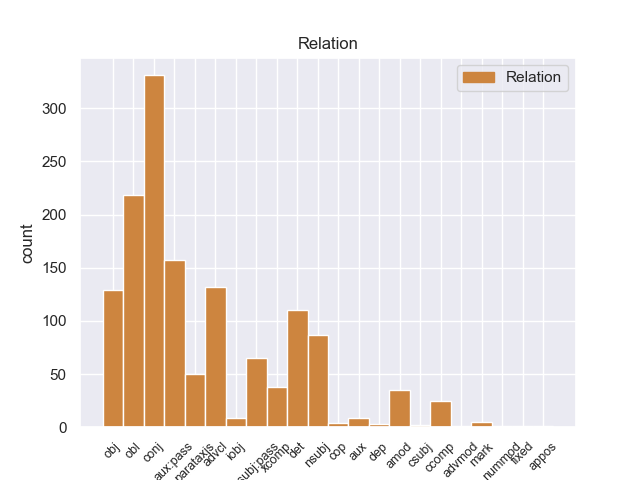
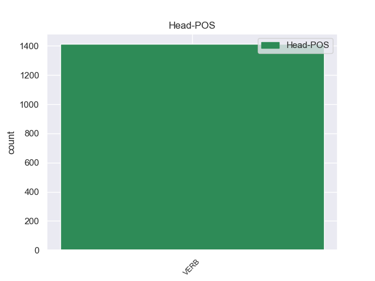
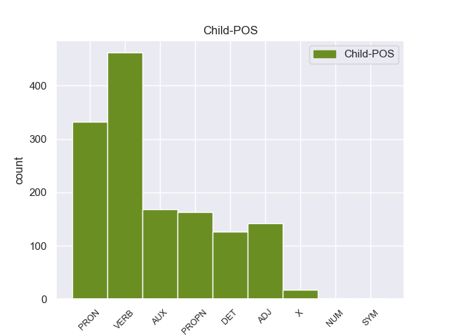

Distribution of features within this leaf



Agreement Rules sorted by frequency.
- When the dependent token is the conjunct(conj) of the head token, and the head token is VERB and the dependent token is VERB.
1 De _ _ _ _ 0 _ _ _
2 la _ _ _ _ 0 _ _ _
3 Vega _ _ _ _ 0 _ _ _
4 ha _ _ _ _ 0 _ _ _
5 pedido pedir VERB _ Gender=Masc|Number=Sing|Tense=Past|VerbForm=Part 0 _ _ _
6 respetar _ _ _ _ 0 _ _ _
7 los _ _ _ _ 0 _ _ _
8 tiempos _ _ _ _ 0 _ _ _
9 de _ _ _ _ 0 _ _ _
10 los _ _ _ _ 0 _ _ _
11 procesos _ _ _ _ 0 _ _ _
12 y _ _ _ _ 0 _ _ _
13 de _ _ _ _ 0 _ _ _
14 la _ _ _ _ 0 _ _ _
15 misma _ _ _ _ 0 _ _ _
16 manera _ _ _ _ 0 _ _ _
17 que _ _ _ _ 0 _ _ _
18 no _ _ _ _ 0 _ _ _
19 ha _ _ _ _ 0 _ _ _
20 querido _ _ _ _ 0 _ _ _
21 entrar _ _ _ _ 0 _ _ _
22 en _ _ _ _ 0 _ _ _
23 la _ _ _ _ 0 _ _ _
24 salida _ _ _ _ 0 _ _ _
25 de _ _ _ _ 0 _ _ _
26 Corbacho _ _ _ _ 0 _ _ _
27 , _ _ _ _ 0 _ _ _
28 tampoco _ _ _ _ 0 _ _ _
29 lo _ _ _ _ 0 _ _ _
30 ha _ _ _ _ 0 _ _ _
31 hecho hacer VERB _ Gender=Masc|Number=Sing|Tense=Past|VerbForm=Part 5 conj _ _
32 la _ _ _ _ 0 _ _ _
33 posible _ _ _ _ 0 _ _ _
34 salida _ _ _ _ 0 _ _ _
35 de _ _ _ _ 0 _ _ _
36 Trinidad _ _ _ _ 0 _ _ _
37 Jiménez _ _ _ _ 0 _ _ _
38 , _ _ _ _ 0 _ _ _
39 que _ _ _ _ 0 _ _ _
40 le _ _ _ _ 0 _ _ _
41 acompañaba _ _ _ _ 0 _ _ _
42 en _ _ _ _ 0 _ _ _
43 la _ _ _ _ 0 _ _ _
44 sala _ _ _ _ 0 _ _ _
45 de _ _ _ _ 0 _ _ _
46 prensa _ _ _ _ 0 _ _ _
47 . _ _ _ _ 0 _ _ _
1 El _ _ _ _ 0 _ _ _
2 mandatario _ _ _ _ 0 _ _ _
3 uruguayo _ _ _ _ 0 _ _ _
4 , _ _ _ _ 0 _ _ _
5 quien _ _ _ _ 0 _ _ _
6 llegó _ _ _ _ 0 _ _ _
7 el _ _ _ _ 0 _ _ _
8 domingo _ _ _ _ 0 _ _ _
9 a _ _ _ _ 0 _ _ _
10 Paraguay _ _ _ _ 0 _ _ _
11 , _ _ _ _ 0 _ _ _
12 inició _ _ _ _ 0 _ _ _
13 este _ _ _ _ 0 _ _ _
14 lunes _ _ _ _ 0 _ _ _
15 sus _ _ _ _ 0 _ _ _
16 actividades _ _ _ _ 0 _ _ _
17 a _ _ _ _ 0 _ _ _
18 el el DET _ Definite=Def|Gender=Masc|Number=Sing|PronType=Art 19 det _ _
19 colocar colocar VERB _ Gender=Masc|Number=Sing|VerbForm=Fin 0 _ _ _
20 una _ _ _ _ 0 _ _ _
21 ofrenda _ _ _ _ 0 _ _ _
22 floral _ _ _ _ 0 _ _ _
23 en _ _ _ _ 0 _ _ _
24 el _ _ _ _ 0 _ _ _
25 Panteón _ _ _ _ 0 _ _ _
26 de _ _ _ _ 0 _ _ _
27 los _ _ _ _ 0 _ _ _
28 Héroes _ _ _ _ 0 _ _ _
29 , _ _ _ _ 0 _ _ _
30 tras _ _ _ _ 0 _ _ _
31 lo _ _ _ _ 0 _ _ _
32 cual _ _ _ _ 0 _ _ _
33 se _ _ _ _ 0 _ _ _
34 trasladó _ _ _ _ 0 _ _ _
35 a _ _ _ _ 0 _ _ _
36 el _ _ _ _ 0 _ _ _
37 Palacio _ _ _ _ 0 _ _ _
38 de _ _ _ _ 0 _ _ _
39 Gobierno _ _ _ _ 0 _ _ _
40 donde _ _ _ _ 0 _ _ _
41 fue _ _ _ _ 0 _ _ _
42 condecorado _ _ _ _ 0 _ _ _
43 por _ _ _ _ 0 _ _ _
44 Lugo _ _ _ _ 0 _ _ _
45 . _ _ _ _ 0 _ _ _
1 Si _ _ _ _ 0 _ _ _
2 un _ _ _ _ 0 _ _ _
3 producto _ _ _ _ 0 _ _ _
4 destinado _ _ _ _ 0 _ _ _
5 a _ _ _ _ 0 _ _ _
6 durar _ _ _ _ 0 _ _ _
7 demasiado _ _ _ _ 0 _ _ _
8 , _ _ _ _ 0 _ _ _
9 una _ _ _ _ 0 _ _ _
10 vez _ _ _ _ 0 _ _ _
11 este estar VERB _ Gender=Masc|Number=Sing|VerbForm=Fin 14 advcl _ _
12 ya _ _ _ _ 0 _ _ _
13 ha _ _ _ _ 0 _ _ _
14 llegado llegar VERB _ Gender=Masc|Number=Sing|Tense=Past|VerbForm=Part 0 _ _ _
15 a _ _ _ _ 0 _ _ _
16 el _ _ _ _ 0 _ _ _
17 mercado _ _ _ _ 0 _ _ _
18 la _ _ _ _ 0 _ _ _
19 producción _ _ _ _ 0 _ _ _
20 puede _ _ _ _ 0 _ _ _
21 parar _ _ _ _ 0 _ _ _
22 hasta _ _ _ _ 0 _ _ _
23 que _ _ _ _ 0 _ _ _
24 no _ _ _ _ 0 _ _ _
25 vuelva _ _ _ _ 0 _ _ _
26 a _ _ _ _ 0 _ _ _
27 necesitar _ _ _ _ 0 _ _ _
28 se _ _ _ _ 0 _ _ _
29 y _ _ _ _ 0 _ _ _
30 esto _ _ _ _ 0 _ _ _
31 suponía _ _ _ _ 0 _ _ _
32 una _ _ _ _ 0 _ _ _
33 catástrofe _ _ _ _ 0 _ _ _
34 para _ _ _ _ 0 _ _ _
35 las _ _ _ _ 0 _ _ _
36 empresas _ _ _ _ 0 _ _ _
37 . _ _ _ _ 0 _ _ _
1 Con _ _ _ _ 0 _ _ _
2 miras _ _ _ _ 0 _ _ _
3 a _ _ _ _ 0 _ _ _
4 minimizar _ _ _ _ 0 _ _ _
5 cualquier _ _ _ _ 0 _ _ _
6 confusión _ _ _ _ 0 _ _ _
7 con _ _ _ _ 0 _ _ _
8 una _ _ _ _ 0 _ _ _
9 religión _ _ _ _ 0 _ _ _
10 , _ _ _ _ 0 _ _ _
11 el _ _ _ _ 0 _ _ _
12 uso _ _ _ _ 0 _ _ _
13 de _ _ _ _ 0 _ _ _
14 la _ _ _ _ 0 _ _ _
15 palabra _ _ _ _ 0 _ _ _
16 " _ _ _ _ 0 _ _ _
17 templo _ _ _ _ 0 _ _ _
18 " _ _ _ _ 0 _ _ _
19 para _ _ _ _ 0 _ _ _
20 describir _ _ _ _ 0 _ _ _
21 los _ _ _ _ 0 _ _ _
22 inmuebles _ _ _ _ 0 _ _ _
23 de _ _ _ _ 0 _ _ _
24 los _ _ _ _ 0 _ _ _
25 Shriners _ _ _ _ 0 _ _ _
26 ha _ _ _ _ 0 _ _ _
27 sido ser AUX _ Gender=Masc|Number=Sing|Tense=Past|VerbForm=Part 28 aux:pass _ _
28 reemplazado reemplazar VERB _ Gender=Masc|Number=Sing|Tense=Past|VerbForm=Part 0 _ _ _
29 por _ _ _ _ 0 _ _ _
30 la _ _ _ _ 0 _ _ _
31 frase _ _ _ _ 0 _ _ _
32 " _ _ _ _ 0 _ _ _
33 Centro _ _ _ _ 0 _ _ _
34 Shriner _ _ _ _ 0 _ _ _
35 " _ _ _ _ 0 _ _ _
36 , _ _ _ _ 0 _ _ _
37 aunque _ _ _ _ 0 _ _ _
38 en _ _ _ _ 0 _ _ _
39 capítulos _ _ _ _ 0 _ _ _
40 individuales _ _ _ _ 0 _ _ _
41 siguen _ _ _ _ 0 _ _ _
42 siendo _ _ _ _ 0 _ _ _
43 nombrados _ _ _ _ 0 _ _ _
44 como _ _ _ _ 0 _ _ _
45 " _ _ _ _ 0 _ _ _
46 templos _ _ _ _ 0 _ _ _
47 " _ _ _ _ 0 _ _ _
48 . _ _ _ _ 0 _ _ _
1 De _ _ _ _ 0 _ _ _
2 la _ _ _ _ 0 _ _ _
3 Vega _ _ _ _ 0 _ _ _
4 ha _ _ _ _ 0 _ _ _
5 pedido _ _ _ _ 0 _ _ _
6 respetar _ _ _ _ 0 _ _ _
7 los _ _ _ _ 0 _ _ _
8 tiempos _ _ _ _ 0 _ _ _
9 de _ _ _ _ 0 _ _ _
10 los _ _ _ _ 0 _ _ _
11 procesos _ _ _ _ 0 _ _ _
12 y _ _ _ _ 0 _ _ _
13 de _ _ _ _ 0 _ _ _
14 la _ _ _ _ 0 _ _ _
15 misma _ _ _ _ 0 _ _ _
16 manera _ _ _ _ 0 _ _ _
17 que _ _ _ _ 0 _ _ _
18 no _ _ _ _ 0 _ _ _
19 ha _ _ _ _ 0 _ _ _
20 querido _ _ _ _ 0 _ _ _
21 entrar _ _ _ _ 0 _ _ _
22 en _ _ _ _ 0 _ _ _
23 la _ _ _ _ 0 _ _ _
24 salida _ _ _ _ 0 _ _ _
25 de _ _ _ _ 0 _ _ _
26 Corbacho _ _ _ _ 0 _ _ _
27 , _ _ _ _ 0 _ _ _
28 tampoco _ _ _ _ 0 _ _ _
29 lo él PRON _ Case=Acc|Gender=Masc|Number=Sing|Person=3|PrepCase=Npr|PronType=Prs 31 obj _ _
30 ha _ _ _ _ 0 _ _ _
31 hecho hacer VERB _ Gender=Masc|Number=Sing|Tense=Past|VerbForm=Part 0 _ _ _
32 la _ _ _ _ 0 _ _ _
33 posible _ _ _ _ 0 _ _ _
34 salida _ _ _ _ 0 _ _ _
35 de _ _ _ _ 0 _ _ _
36 Trinidad _ _ _ _ 0 _ _ _
37 Jiménez _ _ _ _ 0 _ _ _
38 , _ _ _ _ 0 _ _ _
39 que _ _ _ _ 0 _ _ _
40 le _ _ _ _ 0 _ _ _
41 acompañaba _ _ _ _ 0 _ _ _
42 en _ _ _ _ 0 _ _ _
43 la _ _ _ _ 0 _ _ _
44 sala _ _ _ _ 0 _ _ _
45 de _ _ _ _ 0 _ _ _
46 prensa _ _ _ _ 0 _ _ _
47 . _ _ _ _ 0 _ _ _
1 Consolidada consolidar VERB _ Gender=Fem|Number=Sing|VerbForm=Part 0 _ _ _
2 como _ _ _ _ 0 _ _ _
3 una uno PRON _ Gender=Fem|Number=Sing|PronType=Ind 1 obl _ _
4 de _ _ _ _ 0 _ _ _
5 las _ _ _ _ 0 _ _ _
6 grandes _ _ _ _ 0 _ _ _
7 cadenas _ _ _ _ 0 _ _ _
8 españolas _ _ _ _ 0 _ _ _
9 , _ _ _ _ 0 _ _ _
10 ' _ _ _ _ 0 _ _ _
11 Sercotel _ _ _ _ 0 _ _ _
12 hotels _ _ _ _ 0 _ _ _
13 ' _ _ _ _ 0 _ _ _
14 , _ _ _ _ 0 _ _ _
15 fundada _ _ _ _ 0 _ _ _
16 en _ _ _ _ 0 _ _ _
17 1994 _ _ _ _ 0 _ _ _
18 , _ _ _ _ 0 _ _ _
19 introdujo _ _ _ _ 0 _ _ _
20 en _ _ _ _ 0 _ _ _
21 España _ _ _ _ 0 _ _ _
22 un _ _ _ _ 0 _ _ _
23 nuevo _ _ _ _ 0 _ _ _
24 modelo _ _ _ _ 0 _ _ _
25 de _ _ _ _ 0 _ _ _
26 cadena _ _ _ _ 0 _ _ _
27 hotelera _ _ _ _ 0 _ _ _
28 basada _ _ _ _ 0 _ _ _
29 en _ _ _ _ 0 _ _ _
30 la _ _ _ _ 0 _ _ _
31 comercialización _ _ _ _ 0 _ _ _
32 conjunta _ _ _ _ 0 _ _ _
33 bajo _ _ _ _ 0 _ _ _
34 una _ _ _ _ 0 _ _ _
35 misma _ _ _ _ 0 _ _ _
36 marca _ _ _ _ 0 _ _ _
37 de _ _ _ _ 0 _ _ _
38 hoteles _ _ _ _ 0 _ _ _
39 , _ _ _ _ 0 _ _ _
40 cuya _ _ _ _ 0 _ _ _
41 explotación _ _ _ _ 0 _ _ _
42 pertenece _ _ _ _ 0 _ _ _
43 a _ _ _ _ 0 _ _ _
44 diferentes _ _ _ _ 0 _ _ _
45 propietarios _ _ _ _ 0 _ _ _
46 , _ _ _ _ 0 _ _ _
47 permitiéndo _ _ _ _ 0 _ _ _
48 les _ _ _ _ 0 _ _ _
49 competir _ _ _ _ 0 _ _ _
50 contra _ _ _ _ 0 _ _ _
51 las _ _ _ _ 0 _ _ _
52 cadenas _ _ _ _ 0 _ _ _
53 en _ _ _ _ 0 _ _ _
54 igualdad _ _ _ _ 0 _ _ _
55 de _ _ _ _ 0 _ _ _
56 condiciones _ _ _ _ 0 _ _ _
57 , _ _ _ _ 0 _ _ _
58 lo _ _ _ _ 0 _ _ _
59 que _ _ _ _ 0 _ _ _
60 le _ _ _ _ 0 _ _ _
61 ha _ _ _ _ 0 _ _ _
62 llevado _ _ _ _ 0 _ _ _
63 a _ _ _ _ 0 _ _ _
64 convertir _ _ _ _ 0 _ _ _
65 se _ _ _ _ 0 _ _ _
66 hoy _ _ _ _ 0 _ _ _
67 en _ _ _ _ 0 _ _ _
68 día _ _ _ _ 0 _ _ _
69 en _ _ _ _ 0 _ _ _
70 el _ _ _ _ 0 _ _ _
71 segundo _ _ _ _ 0 _ _ _
72 emblema _ _ _ _ 0 _ _ _
73 con _ _ _ _ 0 _ _ _
74 mayor _ _ _ _ 0 _ _ _
75 oferta _ _ _ _ 0 _ _ _
76 de _ _ _ _ 0 _ _ _
77 hoteles _ _ _ _ 0 _ _ _
78 urbanos _ _ _ _ 0 _ _ _
79 en _ _ _ _ 0 _ _ _
80 España _ _ _ _ 0 _ _ _
81 . _ _ _ _ 0 _ _ _
1 Ya _ _ _ _ 0 _ _ _
2 en _ _ _ _ 0 _ _ _
3 2003 _ _ _ _ 0 _ _ _
4 Borja _ _ _ _ 0 _ _ _
5 abandona _ _ _ _ 0 _ _ _
6 el _ _ _ _ 0 _ _ _
7 grupo _ _ _ _ 0 _ _ _
8 y _ _ _ _ 0 _ _ _
9 es _ _ _ _ 0 _ _ _
10 sustituido sustituir VERB _ Gender=Masc|Number=Sing|Tense=Past|VerbForm=Part 0 _ _ _
11 por _ _ _ _ 0 _ _ _
12 Ínigo ínigo PROPN _ Gender=Masc|Number=Sing 10 obl _ _
13 Coppel _ _ _ _ 0 _ _ _
14 ( _ _ _ _ 0 _ _ _
15 ahora _ _ _ _ 0 _ _ _
16 en _ _ _ _ 0 _ _ _
17 solitario _ _ _ _ 0 _ _ _
18 como _ _ _ _ 0 _ _ _
19 Coppel _ _ _ _ 0 _ _ _
20 ) _ _ _ _ 0 _ _ _
21 . _ _ _ _ 0 _ _ _
1 Les _ _ _ _ 0 _ _ _
2 he _ _ _ _ 0 _ _ _
3 pedido _ _ _ _ 0 _ _ _
4 donde _ _ _ _ 0 _ _ _
5 podía _ _ _ _ 0 _ _ _
6 encontrar _ _ _ _ 0 _ _ _
7 un _ _ _ _ 0 _ _ _
8 fabricante _ _ _ _ 0 _ _ _
9 de _ _ _ _ 0 _ _ _
10 trofeos _ _ _ _ 0 _ _ _
11 en _ _ _ _ 0 _ _ _
12 metacrilato _ _ _ _ 0 _ _ _
13 , _ _ _ _ 0 _ _ _
14 y _ _ _ _ 0 _ _ _
15 ellos él PRON _ Case=Acc,Nom|Gender=Masc|Number=Plur|Person=3|PronType=Prs 20 nsubj _ _
16 mismos _ _ _ _ 0 _ _ _
17 me _ _ _ _ 0 _ _ _
18 los _ _ _ _ 0 _ _ _
19 han _ _ _ _ 0 _ _ _
20 fabricado fabricar VERB _ Gender=Masc|Number=Sing|Tense=Past|VerbForm=Part 0 _ _ _
21 a _ _ _ _ 0 _ _ _
22 un _ _ _ _ 0 _ _ _
23 precio _ _ _ _ 0 _ _ _
24 muy _ _ _ _ 0 _ _ _
25 interesante _ _ _ _ 0 _ _ _
26 . _ _ _ _ 0 _ _ _
1 A _ _ _ _ 0 _ _ _
2 continuación _ _ _ _ 0 _ _ _
3 , _ _ _ _ 0 _ _ _
4 sonarán _ _ _ _ 0 _ _ _
5 los _ _ _ _ 0 _ _ _
6 ritmos _ _ _ _ 0 _ _ _
7 más _ _ _ _ 0 _ _ _
8 intensos _ _ _ _ 0 _ _ _
9 de _ _ _ _ 0 _ _ _
10 los _ _ _ _ 0 _ _ _
11 llanos _ _ _ _ 0 _ _ _
12 interpretados _ _ _ _ 0 _ _ _
13 por _ _ _ _ 0 _ _ _
14 una _ _ _ _ 0 _ _ _
15 agrupación _ _ _ _ 0 _ _ _
16 que _ _ _ _ 0 _ _ _
17 romperá _ _ _ _ 0 _ _ _
18 esquemas _ _ _ _ 0 _ _ _
19 : _ _ _ _ 0 _ _ _
20 el _ _ _ _ 0 _ _ _
21 Ensamble _ _ _ _ 0 _ _ _
22 de _ _ _ _ 0 _ _ _
23 Arpas _ _ _ _ 0 _ _ _
24 de _ _ _ _ 0 _ _ _
25 la _ _ _ _ 0 _ _ _
26 Orquesta _ _ _ _ 0 _ _ _
27 de _ _ _ _ 0 _ _ _
28 Música _ _ _ _ 0 _ _ _
29 Popular _ _ _ _ 0 _ _ _
30 de _ _ _ _ 0 _ _ _
31 el _ _ _ _ 0 _ _ _
32 Estado _ _ _ _ 0 _ _ _
33 Guárico _ _ _ _ 0 _ _ _
34 , _ _ _ _ 0 _ _ _
35 integrado _ _ _ _ 0 _ _ _
36 por _ _ _ _ 0 _ _ _
37 14 _ _ _ _ 0 _ _ _
38 ejecutantes _ _ _ _ 0 _ _ _
39 , _ _ _ _ 0 _ _ _
40 todos todo PRON _ Gender=Masc|Number=Plur|PronType=Tot 41 nsubj:pass _ _
41 formados formado VERB _ Gender=Masc|Number=Plur|VerbForm=Part 0 _ _ _
42 por _ _ _ _ 0 _ _ _
43 El _ _ _ _ 0 _ _ _
44 Sistema _ _ _ _ 0 _ _ _
45 , _ _ _ _ 0 _ _ _
46 siendo _ _ _ _ 0 _ _ _
47 algunos _ _ _ _ 0 _ _ _
48 de _ _ _ _ 0 _ _ _
49 ellos _ _ _ _ 0 _ _ _
50 ganadores _ _ _ _ 0 _ _ _
51 de _ _ _ _ 0 _ _ _
52 el _ _ _ _ 0 _ _ _
53 reconocido _ _ _ _ 0 _ _ _
54 Festival _ _ _ _ 0 _ _ _
55 Internacional _ _ _ _ 0 _ _ _
56 de _ _ _ _ 0 _ _ _
57 Arpas _ _ _ _ 0 _ _ _
58 Infantil _ _ _ _ 0 _ _ _
59 y _ _ _ _ 0 _ _ _
60 Adultos _ _ _ _ 0 _ _ _
61 de _ _ _ _ 0 _ _ _
62 Villavicencio _ _ _ _ 0 _ _ _
63 , _ _ _ _ 0 _ _ _
64 Colombia _ _ _ _ 0 _ _ _
65 . _ _ _ _ 0 _ _ _
1 Su _ _ _ _ 0 _ _ _
2 población _ _ _ _ 0 _ _ _
3 fue _ _ _ _ 0 _ _ _
4 estimada estimar VERB _ Gender=Fem|Number=Sing|Tense=Past|VerbForm=Part 0 _ _ _
5 en _ _ _ _ 0 _ _ _
6 2005 _ _ _ _ 0 _ _ _
7 por _ _ _ _ 0 _ _ _
8 el _ _ _ _ 0 _ _ _
9 IBGE _ _ _ _ 0 _ _ _
10 en _ _ _ _ 0 _ _ _
11 97.071 _ _ _ _ 0 _ _ _
12 habitantes _ _ _ _ 0 _ _ _
13 y _ _ _ _ 0 _ _ _
14 está _ _ _ _ 0 _ _ _
15 dividida dividido ADJ _ Gender=Fem|Number=Sing|VerbForm=Part 4 conj _ _
16 en _ _ _ _ 0 _ _ _
17 cinco _ _ _ _ 0 _ _ _
18 municipios _ _ _ _ 0 _ _ _
19 . _ _ _ _ 0 _ _ _
1 El _ _ _ _ 0 _ _ _
2 actual _ _ _ _ 0 _ _ _
3 escudo _ _ _ _ 0 _ _ _
4 está _ _ _ _ 0 _ _ _
5 formado formado VERB _ Gender=Masc|Number=Sing|VerbForm=Part 0 _ _ _
6 por _ _ _ _ 0 _ _ _
7 dos _ _ _ _ 0 _ _ _
8 círculos _ _ _ _ 0 _ _ _
9 concéntricos _ _ _ _ 0 _ _ _
10 con _ _ _ _ 0 _ _ _
11 la _ _ _ _ 0 _ _ _
12 leyenda _ _ _ _ 0 _ _ _
13 GIRONA _ _ _ _ 0 _ _ _
14 FC _ _ _ _ 0 _ _ _
15 en _ _ _ _ 0 _ _ _
16 blanco _ _ _ _ 0 _ _ _
17 sobre _ _ _ _ 0 _ _ _
18 fondo _ _ _ _ 0 _ _ _
19 rojo _ _ _ _ 0 _ _ _
20 , _ _ _ _ 0 _ _ _
21 el _ _ _ _ 0 _ _ _
22 círculo _ _ _ _ 0 _ _ _
23 interior _ _ _ _ 0 _ _ _
24 esta _ _ _ _ 0 _ _ _
25 cruzado cruzado VERB _ Gender=Masc|Number=Sing|VerbForm=Part 5 parataxis _ _
26 por _ _ _ _ 0 _ _ _
27 19 _ _ _ _ 0 _ _ _
28 franjas _ _ _ _ 0 _ _ _
29 , _ _ _ _ 0 _ _ _
30 10 _ _ _ _ 0 _ _ _
31 blancas _ _ _ _ 0 _ _ _
32 y _ _ _ _ 0 _ _ _
33 9 _ _ _ _ 0 _ _ _
34 rojas _ _ _ _ 0 _ _ _
35 portando _ _ _ _ 0 _ _ _
36 un _ _ _ _ 0 _ _ _
37 blasón _ _ _ _ 0 _ _ _
38 lonsanjado _ _ _ _ 0 _ _ _
39 de _ _ _ _ 0 _ _ _
40 oro _ _ _ _ 0 _ _ _
41 con _ _ _ _ 0 _ _ _
42 cuatro _ _ _ _ 0 _ _ _
43 palos _ _ _ _ 0 _ _ _
44 verticales _ _ _ _ 0 _ _ _
45 gules _ _ _ _ 0 _ _ _
46 y _ _ _ _ 0 _ _ _
47 escusón _ _ _ _ 0 _ _ _
48 central _ _ _ _ 0 _ _ _
49 cuadrilongo _ _ _ _ 0 _ _ _
50 ibérico _ _ _ _ 0 _ _ _
51 verado _ _ _ _ 0 _ _ _
52 de _ _ _ _ 0 _ _ _
53 ondas _ _ _ _ 0 _ _ _
54 rojas _ _ _ _ 0 _ _ _
55 y _ _ _ _ 0 _ _ _
56 blancas _ _ _ _ 0 _ _ _
57 . _ _ _ _ 0 _ _ _
1 Ese _ _ _ _ 0 _ _ _
2 verano _ _ _ _ 0 _ _ _
3 , _ _ _ _ 0 _ _ _
4 Cristiano cristiano PROPN _ Gender=Masc|Number=Sing 7 nsubj:pass _ _
5 Ronaldo _ _ _ _ 0 _ _ _
6 fue _ _ _ _ 0 _ _ _
7 vendido vender VERB _ Gender=Masc|Number=Sing|Tense=Past|VerbForm=Part 0 _ _ _
8 a _ _ _ _ 0 _ _ _
9 el _ _ _ _ 0 _ _ _
10 Real _ _ _ _ 0 _ _ _
11 Madrid _ _ _ _ 0 _ _ _
12 por _ _ _ _ 0 _ _ _
13 una _ _ _ _ 0 _ _ _
14 cifra _ _ _ _ 0 _ _ _
15 récord _ _ _ _ 0 _ _ _
16 de _ _ _ _ 0 _ _ _
17 80 _ _ _ _ 0 _ _ _
18 millones _ _ _ _ 0 _ _ _
19 GBP _ _ _ _ 0 _ _ _
20 . _ _ _ _ 0 _ _ _
1 Hemos _ _ _ _ 0 _ _ _
2 tenido tener VERB _ Gender=Masc|Number=Sing|Tense=Past|VerbForm=Part 0 _ _ _
3 todo _ _ _ _ 0 _ _ _
4 guardado guardado ADJ _ Gender=Masc|Number=Sing 2 xcomp _ _
5 allí _ _ _ _ 0 _ _ _
6 durante _ _ _ _ 0 _ _ _
7 10 _ _ _ _ 0 _ _ _
8 meses _ _ _ _ 0 _ _ _
9 . _ _ _ _ 0 _ _ _
1 Por _ _ _ _ 0 _ _ _
2 último último ADJ _ Gender=Masc|Number=Sing 3 amod _ _
3 quiero querer VERB _ Gender=Masc|Number=Sing|VerbForm=Fin 0 _ _ _
4 que _ _ _ _ 0 _ _ _
5 sepa _ _ _ _ 0 _ _ _
6 que _ _ _ _ 0 _ _ _
7 este _ _ _ _ 0 _ _ _
8 blog _ _ _ _ 0 _ _ _
9 está _ _ _ _ 0 _ _ _
10 hecho _ _ _ _ 0 _ _ _
11 por _ _ _ _ 0 _ _ _
12 y _ _ _ _ 0 _ _ _
13 para _ _ _ _ 0 _ _ _
14 usted _ _ _ _ 0 _ _ _
15 , _ _ _ _ 0 _ _ _
16 con _ _ _ _ 0 _ _ _
17 el _ _ _ _ 0 _ _ _
18 único _ _ _ _ 0 _ _ _
19 objetivo _ _ _ _ 0 _ _ _
20 de _ _ _ _ 0 _ _ _
21 ayudar _ _ _ _ 0 _ _ _
22 le _ _ _ _ 0 _ _ _
23 y _ _ _ _ 0 _ _ _
24 guiar _ _ _ _ 0 _ _ _
25 le _ _ _ _ 0 _ _ _
26 en _ _ _ _ 0 _ _ _
27 todo _ _ _ _ 0 _ _ _
28 lo _ _ _ _ 0 _ _ _
29 posible _ _ _ _ 0 _ _ _
30 en _ _ _ _ 0 _ _ _
31 este _ _ _ _ 0 _ _ _
32 mundo _ _ _ _ 0 _ _ _
33 financiero _ _ _ _ 0 _ _ _
34 . _ _ _ _ 0 _ _ _
1 Clematis clematis PROPN _ Gender=Fem|Number=Plur 4 nsubj _ _
2 crassifolia _ _ _ _ 0 _ _ _
3 fue _ _ _ _ 0 _ _ _
4 descrita descrito VERB _ Gender=Fem|Number=Sing|Tense=Past|VerbForm=Part 0 _ _ _
5 por _ _ _ _ 0 _ _ _
6 George _ _ _ _ 0 _ _ _
7 Bentham _ _ _ _ 0 _ _ _
8 y _ _ _ _ 0 _ _ _
9 publicado _ _ _ _ 0 _ _ _
10 en _ _ _ _ 0 _ _ _
11 Flora _ _ _ _ 0 _ _ _
12 Hongkongensis _ _ _ _ 0 _ _ _
13 7 _ _ _ _ 0 _ _ _
14 , _ _ _ _ 0 _ _ _
15 en _ _ _ _ 0 _ _ _
16 el _ _ _ _ 0 _ _ _
17 año _ _ _ _ 0 _ _ _
18 1861 _ _ _ _ 0 _ _ _
19 . _ _ _ _ 0 _ _ _
1 Está _ _ _ _ 0 _ _ _
2 conformado conformado VERB _ Gender=Masc|Number=Sing|VerbForm=Part 0 _ _ _
3 por _ _ _ _ 0 _ _ _
4 las _ _ _ _ 0 _ _ _
5 vías _ _ _ _ 0 _ _ _
6 que _ _ _ _ 0 _ _ _
7 se _ _ _ _ 0 _ _ _
8 orientan _ _ _ _ 0 _ _ _
9 en _ _ _ _ 0 _ _ _
10 dirección _ _ _ _ 0 _ _ _
11 norte _ _ _ _ 0 _ _ _
12 -- _ _ _ _ 0 _ _ _
13 sur _ _ _ _ 0 _ _ _
14 , _ _ _ _ 0 _ _ _
15 paralelo paralelo ADJ _ Gender=Masc|Number=Sing 2 parataxis _ _
16 a _ _ _ _ 0 _ _ _
17 el _ _ _ _ 0 _ _ _
18 río _ _ _ _ 0 _ _ _
19 Santa _ _ _ _ 0 _ _ _
20 ; _ _ _ _ 0 _ _ _
1 Al _ _ _ _ 0 _ _ _
2 hilo _ _ _ _ 0 _ _ _
3 de _ _ _ _ 0 _ _ _
4 ello _ _ _ _ 0 _ _ _
5 , _ _ _ _ 0 _ _ _
6 ha _ _ _ _ 0 _ _ _
7 dicho decir VERB _ Gender=Masc|Number=Sing|Tense=Past|VerbForm=Part 0 _ _ _
8 que _ _ _ _ 0 _ _ _
9 esta _ _ _ _ 0 _ _ _
10 tierra _ _ _ _ 0 _ _ _
11 " _ _ _ _ 0 _ _ _
12 desértica _ _ _ _ 0 _ _ _
13 " _ _ _ _ 0 _ _ _
14 se _ _ _ _ 0 _ _ _
15 ha _ _ _ _ 0 _ _ _
16 convertido convertir VERB _ Gender=Masc|Number=Sing|Tense=Past|VerbForm=Part 7 ccomp _ _
17 en _ _ _ _ 0 _ _ _
18 " _ _ _ _ 0 _ _ _
19 la _ _ _ _ 0 _ _ _
20 capital _ _ _ _ 0 _ _ _
21 de _ _ _ _ 0 _ _ _
22 el _ _ _ _ 0 _ _ _
23 mundo _ _ _ _ 0 _ _ _
24 de _ _ _ _ 0 _ _ _
25 la _ _ _ _ 0 _ _ _
26 agricultura _ _ _ _ 0 _ _ _
27 " _ _ _ _ 0 _ _ _
28 . _ _ _ _ 0 _ _ _
1 El _ _ _ _ 0 _ _ _
2 objetivo _ _ _ _ 0 _ _ _
3 de _ _ _ _ 0 _ _ _
4 el _ _ _ _ 0 _ _ _
5 IDSDR _ _ _ _ 0 _ _ _
6 es _ _ _ _ 0 _ _ _
7 agrupar _ _ _ _ 0 _ _ _
8 a _ _ _ _ 0 _ _ _
9 los _ _ _ _ 0 _ _ _
10 máximos _ _ _ _ 0 _ _ _
11 representantes _ _ _ _ 0 _ _ _
12 de _ _ _ _ 0 _ _ _
13 el _ _ _ _ 0 _ _ _
14 diseño _ _ _ _ 0 _ _ _
15 arquitectónico _ _ _ _ 0 _ _ _
16 y _ _ _ _ 0 _ _ _
17 de _ _ _ _ 0 _ _ _
18 interiores _ _ _ _ 0 _ _ _
19 , _ _ _ _ 0 _ _ _
20 tanto _ _ _ _ 0 _ _ _
21 de _ _ _ _ 0 _ _ _
22 el _ _ _ _ 0 _ _ _
23 mercado _ _ _ _ 0 _ _ _
24 nacional _ _ _ _ 0 _ _ _
25 como _ _ _ _ 0 _ _ _
26 extranjero _ _ _ _ 0 _ _ _
27 , _ _ _ _ 0 _ _ _
28 dentro _ _ _ _ 0 _ _ _
29 de _ _ _ _ 0 _ _ _
30 un _ _ _ _ 0 _ _ _
31 concepto _ _ _ _ 0 _ _ _
32 totalmente _ _ _ _ 0 _ _ _
33 innovador _ _ _ _ 0 _ _ _
34 , _ _ _ _ 0 _ _ _
35 con _ _ _ _ 0 _ _ _
36 la _ _ _ _ 0 _ _ _
37 finalidad _ _ _ _ 0 _ _ _
38 de _ _ _ _ 0 _ _ _
39 mantener _ _ _ _ 0 _ _ _
40 a _ _ _ _ 0 _ _ _
41 la _ _ _ _ 0 _ _ _
42 vanguardia _ _ _ _ 0 _ _ _
43 a _ _ _ _ 0 _ _ _
44 los _ _ _ _ 0 _ _ _
45 profesionales _ _ _ _ 0 _ _ _
46 , _ _ _ _ 0 _ _ _
47 estudiantes _ _ _ _ 0 _ _ _
48 de _ _ _ _ 0 _ _ _
49 la _ _ _ _ 0 _ _ _
50 industria _ _ _ _ 0 _ _ _
51 y _ _ _ _ 0 _ _ _
52 público _ _ _ _ 0 _ _ _
53 en _ _ _ _ 0 _ _ _
54 general _ _ _ _ 0 _ _ _
55 , _ _ _ _ 0 _ _ _
56 que _ _ _ _ 0 _ _ _
57 podrán _ _ _ _ 0 _ _ _
58 admirar _ _ _ _ 0 _ _ _
59 y _ _ _ _ 0 _ _ _
60 sentir _ _ _ _ 0 _ _ _
61 los _ _ _ _ 0 _ _ _
62 mas _ _ _ _ 0 _ _ _
63 hermosos _ _ _ _ 0 _ _ _
64 y _ _ _ _ 0 _ _ _
65 espectaculares _ _ _ _ 0 _ _ _
66 ambientes _ _ _ _ 0 _ _ _
67 y _ _ _ _ 0 _ _ _
68 escenarios _ _ _ _ 0 _ _ _
69 , _ _ _ _ 0 _ _ _
70 creados creado VERB _ Gender=Masc|Number=Plur|VerbForm=Part 0 _ _ _
71 y _ _ _ _ 0 _ _ _
72 diseñados _ _ _ _ 0 _ _ _
73 especialmente _ _ _ _ 0 _ _ _
74 para _ _ _ _ 0 _ _ _
75 este _ _ _ _ 0 _ _ _
76 show show X _ Gender=Masc|Number=Sing 70 obl _ SpaceAfter=No
77 , _ _ _ _ 0 _ _ _
78 así _ _ _ _ 0 _ _ _
79 como _ _ _ _ 0 _ _ _
80 presenciar _ _ _ _ 0 _ _ _
81 las _ _ _ _ 0 _ _ _
82 excelentes _ _ _ _ 0 _ _ _
83 charlas _ _ _ _ 0 _ _ _
84 a _ _ _ _ 0 _ _ _
85 cargo _ _ _ _ 0 _ _ _
86 de _ _ _ _ 0 _ _ _
87 famosas _ _ _ _ 0 _ _ _
88 personalidades _ _ _ _ 0 _ _ _
89 tanto _ _ _ _ 0 _ _ _
90 nacionales _ _ _ _ 0 _ _ _
91 como _ _ _ _ 0 _ _ _
92 internacionales _ _ _ _ 0 _ _ _
93 . _ _ _ _ 0 _ _ _
1 El _ _ _ _ 0 _ _ _
2 examen _ _ _ _ 0 _ _ _
3 de _ _ _ _ 0 _ _ _
4 Carbono _ _ _ _ 0 _ _ _
5 14 _ _ _ _ 0 _ _ _
6 a _ _ _ _ 0 _ _ _
7 través _ _ _ _ 0 _ _ _
8 de _ _ _ _ 0 _ _ _
9 dos _ _ _ _ 0 _ _ _
10 trozos _ _ _ _ 0 _ _ _
11 de _ _ _ _ 0 _ _ _
12 estuco _ _ _ _ 0 _ _ _
13 han _ _ _ _ 0 _ _ _
14 datado datar VERB _ Gender=Masc|Number=Sing|Tense=Past|VerbForm=Part 0 _ _ _
15 los _ _ _ _ 0 _ _ _
16 mismos _ _ _ _ 0 _ _ _
17 en _ _ _ _ 0 _ _ _
18 torno _ _ _ _ 0 _ _ _
19 a _ _ _ _ 0 _ _ _
20 el _ _ _ _ 0 _ _ _
21 año _ _ _ _ 0 _ _ _
22 500 _ _ _ _ 0 _ _ _
23 y _ _ _ _ 0 _ _ _
24 los _ _ _ _ 0 _ _ _
25 otros otro PRON _ Gender=Masc|Number=Plur|PronType=Ind 14 conj _ _
26 en _ _ _ _ 0 _ _ _
27 torno _ _ _ _ 0 _ _ _
28 a _ _ _ _ 0 _ _ _
29 el _ _ _ _ 0 _ _ _
30 año _ _ _ _ 0 _ _ _
31 800 _ _ _ _ 0 _ _ _
32 . _ _ _ _ 0 _ _ _
1 William _ _ _ _ 0 _ _ _
2 James _ _ _ _ 0 _ _ _
3 " _ _ _ _ 0 _ _ _
4 Bill _ _ _ _ 0 _ _ _
5 " _ _ _ _ 0 _ _ _
6 Bolger _ _ _ _ 0 _ _ _
7 ( _ _ _ _ 0 _ _ _
8 nacido _ _ _ _ 0 _ _ _
9 el _ _ _ _ 0 _ _ _
10 en _ _ _ _ 0 _ _ _
11 Nueva _ _ _ _ 0 _ _ _
12 York _ _ _ _ 0 _ _ _
13 ( _ _ _ _ 0 _ _ _
14 Nueva _ _ _ _ 0 _ _ _
15 York _ _ _ _ 0 _ _ _
16 y _ _ _ _ 0 _ _ _
17 fallecido fallecido VERB _ Gender=Masc|Number=Sing|VerbForm=Part 0 _ _ _
18 el el DET _ Definite=Def|Gender=Masc|Number=Sing|PronType=Art 17 nsubj _ _
19 en _ _ _ _ 0 _ _ _
20 Glen _ _ _ _ 0 _ _ _
21 Ellyn _ _ _ _ 0 _ _ _
22 , _ _ _ _ 0 _ _ _
23 Illinois _ _ _ _ 0 _ _ _
24 ) _ _ _ _ 0 _ _ _
25 fue _ _ _ _ 0 _ _ _
26 un _ _ _ _ 0 _ _ _
27 jugador _ _ _ _ 0 _ _ _
28 de _ _ _ _ 0 _ _ _
29 baloncesto _ _ _ _ 0 _ _ _
30 estadounidense _ _ _ _ 0 _ _ _
31 que _ _ _ _ 0 _ _ _
32 disputó _ _ _ _ 0 _ _ _
33 una _ _ _ _ 0 _ _ _
34 temporada _ _ _ _ 0 _ _ _
35 en _ _ _ _ 0 _ _ _
36 la _ _ _ _ 0 _ _ _
37 NBA _ _ _ _ 0 _ _ _
38 . _ _ _ _ 0 _ _ _
1 El _ _ _ _ 0 _ _ _
2 restaurante _ _ _ _ 0 _ _ _
3 Enoteca _ _ _ _ 0 _ _ _
4 de _ _ _ _ 0 _ _ _
5 el _ _ _ _ 0 _ _ _
6 Hotel _ _ _ _ 0 _ _ _
7 Arts _ _ _ _ 0 _ _ _
8 Barcelona _ _ _ _ 0 _ _ _
9 , _ _ _ _ 0 _ _ _
10 que _ _ _ _ 0 _ _ _
11 regenta _ _ _ _ 0 _ _ _
12 Paco _ _ _ _ 0 _ _ _
13 Pérez _ _ _ _ 0 _ _ _
14 , _ _ _ _ 0 _ _ _
15 ha _ _ _ _ 0 _ _ _
16 vuelto volver VERB _ Gender=Masc|Number=Sing|Tense=Past|VerbForm=Part 0 _ _ _
17 a _ _ _ _ 0 _ _ _
18 ser _ _ _ _ 0 _ _ _
19 reconocido reconocer VERB _ Gender=Masc|Number=Sing|Tense=Past|VerbForm=Part 16 xcomp _ _
20 con _ _ _ _ 0 _ _ _
21 una _ _ _ _ 0 _ _ _
22 estrella _ _ _ _ 0 _ _ _
23 Michelin _ _ _ _ 0 _ _ _
24 que _ _ _ _ 0 _ _ _
25 ya _ _ _ _ 0 _ _ _
26 le _ _ _ _ 0 _ _ _
27 fue _ _ _ _ 0 _ _ _
28 otorgada _ _ _ _ 0 _ _ _
29 el _ _ _ _ 0 _ _ _
30 año _ _ _ _ 0 _ _ _
31 pasado _ _ _ _ 0 _ _ _
32 en _ _ _ _ 0 _ _ _
33 la _ _ _ _ 0 _ _ _
34 edición _ _ _ _ 0 _ _ _
35 de _ _ _ _ 0 _ _ _
36 la _ _ _ _ 0 _ _ _
37 guía _ _ _ _ 0 _ _ _
38 2010 _ _ _ _ 0 _ _ _
39 . _ _ _ _ 0 _ _ _
1 El _ _ _ _ 0 _ _ _
2 juez _ _ _ _ 0 _ _ _
3 Fernando _ _ _ _ 0 _ _ _
4 Poviña _ _ _ _ 0 _ _ _
5 le _ _ _ _ 0 _ _ _
6 prohibió _ _ _ _ 0 _ _ _
7 salir _ _ _ _ 0 _ _ _
8 de _ _ _ _ 0 _ _ _
9 Argentina _ _ _ _ 0 _ _ _
10 a _ _ _ _ 0 _ _ _
11 el _ _ _ _ 0 _ _ _
12 empresario _ _ _ _ 0 _ _ _
13 de _ _ _ _ 0 _ _ _
14 el _ _ _ _ 0 _ _ _
15 ingenio _ _ _ _ 0 _ _ _
16 jujeño _ _ _ _ 0 _ _ _
17 , _ _ _ _ 0 _ _ _
18 además _ _ _ _ 0 _ _ _
19 mandó _ _ _ _ 0 _ _ _
20 a _ _ _ _ 0 _ _ _
21 detener _ _ _ _ 0 _ _ _
22 a _ _ _ _ 0 _ _ _
23 cuatro _ _ _ _ 0 _ _ _
24 policías _ _ _ _ 0 _ _ _
25 que _ _ _ _ 0 _ _ _
26 habrían _ _ _ _ 0 _ _ _
27 estado estar AUX _ Gender=Masc|Number=Sing|Tense=Past|VerbForm=Part 28 aux _ _
28 implicados implicado VERB _ Gender=Masc|Number=Plur|VerbForm=Part 0 _ _ _
29 en _ _ _ _ 0 _ _ _
30 la _ _ _ _ 0 _ _ _
31 noche _ _ _ _ 0 _ _ _
32 de _ _ _ _ 0 _ _ _
33 el _ _ _ _ 0 _ _ _
34 apagón _ _ _ _ 0 _ _ _
35 . _ _ _ _ 0 _ _ _
1 Muchos _ _ _ _ 0 _ _ _
2 críticos _ _ _ _ 0 _ _ _
3 modernos _ _ _ _ 0 _ _ _
4 han _ _ _ _ 0 _ _ _
5 señalado señalar VERB _ Gender=Masc|Number=Sing|Tense=Past|VerbForm=Part 0 _ _ _
6 que _ _ _ _ 0 _ _ _
7 el _ _ _ _ 0 _ _ _
8 juego _ _ _ _ 0 _ _ _
9 es _ _ _ _ 0 _ _ _
10 muy _ _ _ _ 0 _ _ _
11 lento lento ADJ _ Gender=Masc|Number=Sing 5 ccomp _ _
12 para _ _ _ _ 0 _ _ _
13 los _ _ _ _ 0 _ _ _
14 estándares _ _ _ _ 0 _ _ _
15 contemporáneos _ _ _ _ 0 _ _ _
16 e _ _ _ _ 0 _ _ _
17 implica _ _ _ _ 0 _ _ _
18 mucho _ _ _ _ 0 _ _ _
19 más _ _ _ _ 0 _ _ _
20 tiempo _ _ _ _ 0 _ _ _
21 en _ _ _ _ 0 _ _ _
22 la _ _ _ _ 0 _ _ _
23 búsqueda _ _ _ _ 0 _ _ _
24 de _ _ _ _ 0 _ _ _
25 batallas _ _ _ _ 0 _ _ _
26 aleatorias _ _ _ _ 0 _ _ _
27 para _ _ _ _ 0 _ _ _
28 incrementar _ _ _ _ 0 _ _ _
29 los _ _ _ _ 0 _ _ _
30 niveles _ _ _ _ 0 _ _ _
31 de _ _ _ _ 0 _ _ _
32 experiencia _ _ _ _ 0 _ _ _
33 y _ _ _ _ 0 _ _ _
34 dinero _ _ _ _ 0 _ _ _
35 que _ _ _ _ 0 _ _ _
36 el _ _ _ _ 0 _ _ _
37 que _ _ _ _ 0 _ _ _
38 se _ _ _ _ 0 _ _ _
39 dedica _ _ _ _ 0 _ _ _
40 a _ _ _ _ 0 _ _ _
41 explorar _ _ _ _ 0 _ _ _
42 y _ _ _ _ 0 _ _ _
43 resolver _ _ _ _ 0 _ _ _
44 acertijos _ _ _ _ 0 _ _ _
45 . _ _ _ _ 0 _ _ _
1 Dicha _ _ _ _ 0 _ _ _
2 ruta _ _ _ _ 0 _ _ _
3 es _ _ _ _ 0 _ _ _
4 conocida conocido VERB _ Gender=Fem|Number=Sing|Tense=Past|VerbForm=Part 0 _ _ _
5 como _ _ _ _ 0 _ _ _
6 Causey _ _ _ _ 0 _ _ _
7 Mounth _ _ _ _ 0 _ _ _
8 , _ _ _ _ 0 _ _ _
9 y _ _ _ _ 0 _ _ _
10 consiste _ _ _ _ 0 _ _ _
11 en _ _ _ _ 0 _ _ _
12 una _ _ _ _ 0 _ _ _
13 antigua _ _ _ _ 0 _ _ _
14 carretera _ _ _ _ 0 _ _ _
15 construida _ _ _ _ 0 _ _ _
16 en _ _ _ _ 0 _ _ _
17 alguna _ _ _ _ 0 _ _ _
18 de _ _ _ _ 0 _ _ _
19 sus _ _ _ _ 0 _ _ _
20 partes _ _ _ _ 0 _ _ _
21 con _ _ _ _ 0 _ _ _
22 cantería _ _ _ _ 0 _ _ _
23 de _ _ _ _ 0 _ _ _
24 piedra _ _ _ _ 0 _ _ _
25 y _ _ _ _ 0 _ _ _
26 elevada _ _ _ _ 0 _ _ _
27 respecto _ _ _ _ 0 _ _ _
28 de _ _ _ _ 0 _ _ _
29 el _ _ _ _ 0 _ _ _
30 terreno _ _ _ _ 0 _ _ _
31 por _ _ _ _ 0 _ _ _
32 el _ _ _ _ 0 _ _ _
33 que _ _ _ _ 0 _ _ _
34 discurre _ _ _ _ 0 _ _ _
35 , _ _ _ _ 0 _ _ _
36 con _ _ _ _ 0 _ _ _
37 la _ _ _ _ 0 _ _ _
38 finalidad _ _ _ _ 0 _ _ _
39 de _ _ _ _ 0 _ _ _
40 evitar _ _ _ _ 0 _ _ _
41 inundaciones _ _ _ _ 0 _ _ _
42 en _ _ _ _ 0 _ _ _
43 la _ _ _ _ 0 _ _ _
44 misma _ _ _ _ 0 _ _ _
45 , _ _ _ _ 0 _ _ _
46 a _ _ _ _ 0 _ _ _
47 el _ _ _ _ 0 _ _ _
48 discurrir _ _ _ _ 0 _ _ _
49 a _ _ _ _ 0 _ _ _
50 través _ _ _ _ 0 _ _ _
51 de _ _ _ _ 0 _ _ _
52 pantanos _ _ _ _ 0 _ _ _
53 y _ _ _ _ 0 _ _ _
54 marismas _ _ _ _ 0 _ _ _
55 , _ _ _ _ 0 _ _ _
56 siendo _ _ _ _ 0 _ _ _
57 la _ _ _ _ 0 _ _ _
58 más _ _ _ _ 0 _ _ _
59 conocida conocido ADJ _ Gender=Fem|Number=Sing|VerbForm=Part 4 advcl _ _
60 de _ _ _ _ 0 _ _ _
61 dichas _ _ _ _ 0 _ _ _
62 zonas _ _ _ _ 0 _ _ _
63 pantanosas _ _ _ _ 0 _ _ _
64 la _ _ _ _ 0 _ _ _
65 reserva _ _ _ _ 0 _ _ _
66 natural _ _ _ _ 0 _ _ _
67 de _ _ _ _ 0 _ _ _
68 Portlethen _ _ _ _ 0 _ _ _
69 Moss _ _ _ _ 0 _ _ _
70 . _ _ _ _ 0 _ _ _
1 Mark _ _ _ _ 0 _ _ _
2 Bridge _ _ _ _ 0 _ _ _
3 ha _ _ _ _ 0 _ _ _
4 jugado _ _ _ _ 0 _ _ _
5 para _ _ _ _ 0 _ _ _
6 el _ _ _ _ 0 _ _ _
7 equipo _ _ _ _ 0 _ _ _
8 sub _ _ _ _ 0 _ _ _
9 - _ _ _ _ 0 _ _ _
10 20 _ _ _ _ 0 _ _ _
11 australiano _ _ _ _ 0 _ _ _
12 , _ _ _ _ 0 _ _ _
13 con _ _ _ _ 0 _ _ _
14 el el DET _ Definite=Def|Gender=Masc|Number=Sing|PronType=Art 15 obl _ _
15 jugó jugar VERB _ Gender=Masc|Number=Sing|VerbForm=Fin 0 _ _ _
16 nueve _ _ _ _ 0 _ _ _
17 partidos _ _ _ _ 0 _ _ _
18 en _ _ _ _ 0 _ _ _
19 los _ _ _ _ 0 _ _ _
20 que _ _ _ _ 0 _ _ _
21 anotó _ _ _ _ 0 _ _ _
22 la _ _ _ _ 0 _ _ _
23 misma _ _ _ _ 0 _ _ _
24 cantidad _ _ _ _ 0 _ _ _
25 de _ _ _ _ 0 _ _ _
26 goles _ _ _ _ 0 _ _ _
27 . _ _ _ _ 0 _ _ _
1 Ofiuco _ _ _ _ 0 _ _ _
2 o _ _ _ _ 0 _ _ _
3 Ophiuchus _ _ _ _ 0 _ _ _
4 ( _ _ _ _ 0 _ _ _
5 el _ _ _ _ 0 _ _ _
6 portador _ _ _ _ 0 _ _ _
7 de _ _ _ _ 0 _ _ _
8 la _ _ _ _ 0 _ _ _
9 serpiente _ _ _ _ 0 _ _ _
10 ) _ _ _ _ 0 _ _ _
11 , _ _ _ _ 0 _ _ _
12 que _ _ _ _ 0 _ _ _
13 es _ _ _ _ 0 _ _ _
14 una _ _ _ _ 0 _ _ _
15 de _ _ _ _ 0 _ _ _
16 las _ _ _ _ 0 _ _ _
17 constelaciones _ _ _ _ 0 _ _ _
18 descritas _ _ _ _ 0 _ _ _
19 por _ _ _ _ 0 _ _ _
20 Ptolomeo _ _ _ _ 0 _ _ _
21 entre _ _ _ _ 0 _ _ _
22 sus _ _ _ _ 0 _ _ _
23 48 _ _ _ _ 0 _ _ _
24 constelaciones _ _ _ _ 0 _ _ _
25 escrituradas _ _ _ _ 0 _ _ _
26 , _ _ _ _ 0 _ _ _
27 está _ _ _ _ 0 _ _ _
28 considerado considerado VERB _ Gender=Masc|Number=Sing|VerbForm=Part 0 _ _ _
29 como _ _ _ _ 0 _ _ _
30 el _ _ _ _ 0 _ _ _
31 decimotercero decimotercero ADJ _ Gender=Masc|Number=Sing|NumType=Ord 28 obl _ _
32 de _ _ _ _ 0 _ _ _
33 los _ _ _ _ 0 _ _ _
34 signos _ _ _ _ 0 _ _ _
35 zodiacales _ _ _ _ 0 _ _ _
36 que _ _ _ _ 0 _ _ _
37 junto _ _ _ _ 0 _ _ _
38 con _ _ _ _ 0 _ _ _
39 el _ _ _ _ 0 _ _ _
40 de _ _ _ _ 0 _ _ _
41 la _ _ _ _ 0 _ _ _
42 ballena _ _ _ _ 0 _ _ _
43 optan _ _ _ _ 0 _ _ _
44 por _ _ _ _ 0 _ _ _
45 incorporar _ _ _ _ 0 _ _ _
46 se _ _ _ _ 0 _ _ _
47 a _ _ _ _ 0 _ _ _
48 los _ _ _ _ 0 _ _ _
49 signos _ _ _ _ 0 _ _ _
50 actuales _ _ _ _ 0 _ _ _
51 . _ _ _ _ 0 _ _ _
1 Este _ _ _ _ 0 _ _ _
2 acto _ _ _ _ 0 _ _ _
3 , _ _ _ _ 0 _ _ _
4 fue _ _ _ _ 0 _ _ _
5 repudiado repudiar VERB _ Gender=Masc|Number=Sing|Tense=Past|VerbForm=Part 0 _ _ _
6 por _ _ _ _ 0 _ _ _
7 los _ _ _ _ 0 _ _ _
8 habitantes _ _ _ _ 0 _ _ _
9 de _ _ _ _ 0 _ _ _
10 los _ _ _ _ 0 _ _ _
11 demás _ _ _ _ 0 _ _ _
12 poblados _ _ _ _ 0 _ _ _
13 vecinos _ _ _ _ 0 _ _ _
14 : _ _ _ _ 0 _ _ _
15 Azacualpa _ _ _ _ 0 _ _ _
16 , _ _ _ _ 0 _ _ _
17 San _ _ _ _ 0 _ _ _
18 Miguel _ _ _ _ 0 _ _ _
19 , _ _ _ _ 0 _ _ _
20 El _ _ _ _ 0 _ _ _
21 Corpus _ _ _ _ 0 _ _ _
22 que _ _ _ _ 0 _ _ _
23 denunciaron _ _ _ _ 0 _ _ _
24 ante _ _ _ _ 0 _ _ _
25 las _ _ _ _ 0 _ _ _
26 autoridades _ _ _ _ 0 _ _ _
27 que _ _ _ _ 0 _ _ _
28 la _ _ _ _ 0 _ _ _
29 planta _ _ _ _ 0 _ _ _
30 de _ _ _ _ 0 _ _ _
31 tratamiento _ _ _ _ 0 _ _ _
32 podría _ _ _ _ 0 _ _ _
33 tener _ _ _ _ 0 _ _ _
34 un _ _ _ _ 0 _ _ _
35 vertido _ _ _ _ 0 _ _ _
36 de _ _ _ _ 0 _ _ _
37 cianuro _ _ _ _ 0 _ _ _
38 a _ _ _ _ 0 _ _ _
39 el _ _ _ _ 0 _ _ _
40 Río _ _ _ _ 0 _ _ _
41 Higuito _ _ _ _ 0 _ _ _
42 , _ _ _ _ 0 _ _ _
43 de _ _ _ _ 0 _ _ _
44 el _ _ _ _ 0 _ _ _
45 cual _ _ _ _ 0 _ _ _
46 se _ _ _ _ 0 _ _ _
47 aprovechan _ _ _ _ 0 _ _ _
48 sus _ _ _ _ 0 _ _ _
49 aguas _ _ _ _ 0 _ _ _
50 para _ _ _ _ 0 _ _ _
51 potabilizar _ _ _ _ 0 _ _ _
52 las _ _ _ _ 0 _ _ _
53 , _ _ _ _ 0 _ _ _
54 uno uno PRON _ Gender=Masc|Number=Sing|PronType=Ind 5 parataxis _ _
55 de _ _ _ _ 0 _ _ _
56 los _ _ _ _ 0 _ _ _
57 activistas _ _ _ _ 0 _ _ _
58 pro _ _ _ _ 0 _ _ _
59 indemnización _ _ _ _ 0 _ _ _
60 a _ _ _ _ 0 _ _ _
61 los _ _ _ _ 0 _ _ _
62 habitantes _ _ _ _ 0 _ _ _
63 es _ _ _ _ 0 _ _ _
64 el _ _ _ _ 0 _ _ _
65 Obispo _ _ _ _ 0 _ _ _
66 de _ _ _ _ 0 _ _ _
67 la _ _ _ _ 0 _ _ _
68 Diócesis _ _ _ _ 0 _ _ _
69 de _ _ _ _ 0 _ _ _
70 Santa _ _ _ _ 0 _ _ _
71 Rosa _ _ _ _ 0 _ _ _
72 de _ _ _ _ 0 _ _ _
73 Copán _ _ _ _ 0 _ _ _
74 , _ _ _ _ 0 _ _ _
75 Monseñor _ _ _ _ 0 _ _ _
76 Luis _ _ _ _ 0 _ _ _
77 Alfonso _ _ _ _ 0 _ _ _
78 Santos _ _ _ _ 0 _ _ _
79 Villeda _ _ _ _ 0 _ _ _
80 y _ _ _ _ 0 _ _ _
81 además _ _ _ _ 0 _ _ _
82 que _ _ _ _ 0 _ _ _
83 el _ _ _ _ 0 _ _ _
84 área _ _ _ _ 0 _ _ _
85 boscosa _ _ _ _ 0 _ _ _
86 talada _ _ _ _ 0 _ _ _
87 , _ _ _ _ 0 _ _ _
88 fue _ _ _ _ 0 _ _ _
89 demandada _ _ _ _ 0 _ _ _
90 por _ _ _ _ 0 _ _ _
91 Greenpeace _ _ _ _ 0 _ _ _
92 , _ _ _ _ 0 _ _ _
93 ya _ _ _ _ 0 _ _ _
94 que _ _ _ _ 0 _ _ _
95 el _ _ _ _ 0 _ _ _
96 efecto _ _ _ _ 0 _ _ _
97 causaría _ _ _ _ 0 _ _ _
98 erosión _ _ _ _ 0 _ _ _
99 en _ _ _ _ 0 _ _ _
100 las _ _ _ _ 0 _ _ _
101 montañas _ _ _ _ 0 _ _ _
102 y _ _ _ _ 0 _ _ _
103 zonas _ _ _ _ 0 _ _ _
104 aledañas _ _ _ _ 0 _ _ _
105 utilizadas _ _ _ _ 0 _ _ _
106 para _ _ _ _ 0 _ _ _
107 cultivo _ _ _ _ 0 _ _ _
108 y _ _ _ _ 0 _ _ _
109 ganadería _ _ _ _ 0 _ _ _
110 . _ _ _ _ 0 _ _ _
1 Fue _ _ _ _ 0 _ _ _
2 cedido cedido VERB _ Gender=Masc|Number=Sing|Tense=Past|VerbForm=Part 0 _ _ _
3 a _ _ _ _ 0 _ _ _
4 el _ _ _ _ 0 _ _ _
5 ASVEL asvel PROPN _ Gender=Masc|Number=Sing 2 iobj _ _
6 Lyon _ _ _ _ 0 _ _ _
7 - _ _ _ _ 0 _ _ _
8 Villeurbanne _ _ _ _ 0 _ _ _
9 , _ _ _ _ 0 _ _ _
10 de _ _ _ _ 0 _ _ _
11 la _ _ _ _ 0 _ _ _
12 liga _ _ _ _ 0 _ _ _
13 francesa _ _ _ _ 0 _ _ _
14 . _ _ _ _ 0 _ _ _
1 Hay _ _ _ _ 0 _ _ _
2 varios _ _ _ _ 0 _ _ _
3 ejércitos _ _ _ _ 0 _ _ _
4 con _ _ _ _ 0 _ _ _
5 igualdad _ _ _ _ 0 _ _ _
6 de _ _ _ _ 0 _ _ _
7 fortaleza _ _ _ _ 0 _ _ _
8 para _ _ _ _ 0 _ _ _
9 elegir _ _ _ _ 0 _ _ _
10 , _ _ _ _ 0 _ _ _
11 incluido incluir VERB _ Gender=Masc|Number=Sing|Tense=Past|VerbForm=Part 0 _ _ _
12 el _ _ _ _ 0 _ _ _
13 ejército ejército PROPN _ Gender=Masc|Number=Sing 11 obj _ _
14 FIDE _ _ _ _ 0 _ _ _
15 . _ _ _ _ 0 _ _ _
1 " _ _ _ _ 0 _ _ _
2 Sobre _ _ _ _ 0 _ _ _
3 la _ _ _ _ 0 _ _ _
4 venta _ _ _ _ 0 _ _ _
5 , _ _ _ _ 0 _ _ _
6 pregún _ _ _ _ 0 _ _ _
7 te _ _ _ _ 0 _ _ _
8 le _ _ _ _ 0 _ _ _
9 a _ _ _ _ 0 _ _ _
10 los _ _ _ _ 0 _ _ _
11 directivos _ _ _ _ 0 _ _ _
12 de _ _ _ _ 0 _ _ _
13 Povisa _ _ _ _ 0 _ _ _
14 , _ _ _ _ 0 _ _ _
15 a _ _ _ _ 0 _ _ _
16 nosotros yo PRON _ Case=Acc,Nom|Gender=Masc|Number=Plur|Person=1|PronType=Prs 21 iobj _ _
17 no _ _ _ _ 0 _ _ _
18 se _ _ _ _ 0 _ _ _
19 nos _ _ _ _ 0 _ _ _
20 ha _ _ _ _ 0 _ _ _
21 notificado notificar VERB _ Gender=Masc|Number=Sing|Tense=Past|VerbForm=Part 0 _ _ _
22 nada _ _ _ _ 0 _ _ _
23 " _ _ _ _ 0 _ _ _
24 , _ _ _ _ 0 _ _ _
25 ha _ _ _ _ 0 _ _ _
26 sentenciado _ _ _ _ 0 _ _ _
27 a _ _ _ _ 0 _ _ _
28 el _ _ _ _ 0 _ _ _
29 ser _ _ _ _ 0 _ _ _
30 preguntado _ _ _ _ 0 _ _ _
31 sobre _ _ _ _ 0 _ _ _
32 el _ _ _ _ 0 _ _ _
33 tema _ _ _ _ 0 _ _ _
34 en _ _ _ _ 0 _ _ _
35 la _ _ _ _ 0 _ _ _
36 rueda _ _ _ _ 0 _ _ _
37 de _ _ _ _ 0 _ _ _
38 prensa _ _ _ _ 0 _ _ _
39 posterior _ _ _ _ 0 _ _ _
40 a _ _ _ _ 0 _ _ _
41 el _ _ _ _ 0 _ _ _
42 Consello _ _ _ _ 0 _ _ _
43 de _ _ _ _ 0 _ _ _
44 la _ _ _ _ 0 _ _ _
45 Xunta _ _ _ _ 0 _ _ _
46 . _ _ _ _ 0 _ _ _
1 Esta _ _ _ _ 0 _ _ _
2 ciudad _ _ _ _ 0 _ _ _
3 pertenece _ _ _ _ 0 _ _ _
4 a _ _ _ _ 0 _ _ _
5 la _ _ _ _ 0 _ _ _
6 Región _ _ _ _ 0 _ _ _
7 Quechua _ _ _ _ 0 _ _ _
8 a _ _ _ _ 0 _ _ _
9 el _ _ _ _ 0 _ _ _
10 estar estar AUX _ Gender=Masc|Number=Sing|VerbForm=Fin 11 cop _ _
11 ubicado ubicado VERB _ Gender=Masc|Number=Sing|VerbForm=Part 0 _ _ _
12 a _ _ _ _ 0 _ _ _
13 3.052 _ _ _ _ 0 _ _ _
14 m.s.n.m. _ _ _ _ 0 _ _ _
1 Los _ _ _ _ 0 _ _ _
2 pueblos _ _ _ _ 0 _ _ _
3 tuareg _ _ _ _ 0 _ _ _
4 también _ _ _ _ 0 _ _ _
5 se _ _ _ _ 0 _ _ _
6 había _ _ _ _ 0 _ _ _
7 quejado _ _ _ _ 0 _ _ _
8 de _ _ _ _ 0 _ _ _
9 la _ _ _ _ 0 _ _ _
10 marginación _ _ _ _ 0 _ _ _
11 dentro _ _ _ _ 0 _ _ _
12 de _ _ _ _ 0 _ _ _
13 Malí _ _ _ _ 0 _ _ _
14 , _ _ _ _ 0 _ _ _
15 así _ _ _ _ 0 _ _ _
16 como _ _ _ _ 0 _ _ _
17 basado _ _ _ _ 0 _ _ _
18 en _ _ _ _ 0 _ _ _
19 los _ _ _ _ 0 _ _ _
20 acuerdos _ _ _ _ 0 _ _ _
21 anteriores _ _ _ _ 0 _ _ _
22 para _ _ _ _ 0 _ _ _
23 poner _ _ _ _ 0 _ _ _
24 fin _ _ _ _ 0 _ _ _
25 a _ _ _ _ 0 _ _ _
26 las _ _ _ _ 0 _ _ _
27 rebeliones _ _ _ _ 0 _ _ _
28 tuareg _ _ _ _ 0 _ _ _
29 los _ _ _ _ 0 _ _ _
30 últimos último ADJ _ Gender=Masc|Number=Plur 32 nsubj:pass _ _
31 fueron _ _ _ _ 0 _ _ _
32 violados violar VERB _ Gender=Masc|Number=Plur|Tense=Past|VerbForm=Part 0 _ _ _
33 por _ _ _ _ 0 _ _ _
34 Malí _ _ _ _ 0 _ _ _
35 , _ _ _ _ 0 _ _ _
36 un _ _ _ _ 0 _ _ _
37 reclamo _ _ _ _ 0 _ _ _
38 Malí _ _ _ _ 0 _ _ _
39 lo _ _ _ _ 0 _ _ _
40 niega _ _ _ _ 0 _ _ _
41 . _ _ _ _ 0 _ _ _
1 La _ _ _ _ 0 _ _ _
2 C c X _ Gender=Fem|Number=Sing 6 nsubj _ _
3 - _ _ _ _ 0 _ _ _
4 2 _ _ _ _ 0 _ _ _
5 la _ _ _ _ 0 _ _ _
6 une une VERB _ Gender=Fem|Number=Sing|VerbForm=Fin 0 _ _ _
7 con _ _ _ _ 0 _ _ _
8 Pulpí _ _ _ _ 0 _ _ _
9 , _ _ _ _ 0 _ _ _
10 Lorca _ _ _ _ 0 _ _ _
11 , _ _ _ _ 0 _ _ _
12 Murcia _ _ _ _ 0 _ _ _
13 y _ _ _ _ 0 _ _ _
14 con _ _ _ _ 0 _ _ _
15 Águilas _ _ _ _ 0 _ _ _
16 . _ _ _ _ 0 _ _ _
1 Creado creado VERB _ Gender=Masc|Number=Sing|VerbForm=Part 0 _ _ _
2 por _ _ _ _ 0 _ _ _
3 iniciativa _ _ _ _ 0 _ _ _
4 de _ _ _ _ 0 _ _ _
5 creado creado VERB _ Gender=Masc|Number=Sing|VerbForm=Part 1 dep _ _
6 por _ _ _ _ 0 _ _ _
7 Mariano _ _ _ _ 0 _ _ _
8 García _ _ _ _ 0 _ _ _
9 Morales _ _ _ _ 0 _ _ _
10 y _ _ _ _ 0 _ _ _
11 aprobado _ _ _ _ 0 _ _ _
12 por _ _ _ _ 0 _ _ _
13 Decreto _ _ _ _ 0 _ _ _
14 de _ _ _ _ 0 _ _ _
15 15 _ _ _ _ 0 _ _ _
16 de _ _ _ _ 0 _ _ _
17 junio _ _ _ _ 0 _ _ _
18 de _ _ _ _ 0 _ _ _
19 1942 _ _ _ _ 0 _ _ _
20 como _ _ _ _ 0 _ _ _
21 organismo _ _ _ _ 0 _ _ _
22 autónomo _ _ _ _ 0 _ _ _
23 , _ _ _ _ 0 _ _ _
24 denominado _ _ _ _ 0 _ _ _
25 Centro _ _ _ _ 0 _ _ _
26 Experimental _ _ _ _ 0 _ _ _
27 de _ _ _ _ 0 _ _ _
28 Arqultectura _ _ _ _ 0 _ _ _
29 , _ _ _ _ 0 _ _ _
30 dependiente _ _ _ _ 0 _ _ _
31 de _ _ _ _ 0 _ _ _
32 el _ _ _ _ 0 _ _ _
33 Ministerio _ _ _ _ 0 _ _ _
34 de _ _ _ _ 0 _ _ _
35 la _ _ _ _ 0 _ _ _
36 Gobernación _ _ _ _ 0 _ _ _
37 de _ _ _ _ 0 _ _ _
38 España _ _ _ _ 0 _ _ _
39 , _ _ _ _ 0 _ _ _
40 siendo _ _ _ _ 0 _ _ _
41 ministro _ _ _ _ 0 _ _ _
42 Valentín _ _ _ _ 0 _ _ _
43 Galarza _ _ _ _ 0 _ _ _
44 Morante _ _ _ _ 0 _ _ _
45 . _ _ _ _ 0 _ _ _
1 Io _ _ _ _ 0 _ _ _
2 che _ _ _ _ 0 _ _ _
3 l' _ _ _ _ 0 _ _ _
4 onde _ _ _ _ 0 _ _ _
5 raffreno raffreno X _ Gender=Masc|Number=Sing 14 nsubj:pass _ SpaceAfter=No
6 , _ _ _ _ 0 _ _ _
7 que _ _ _ _ 0 _ _ _
8 abrió _ _ _ _ 0 _ _ _
9 el _ _ _ _ 0 _ _ _
10 Intermedio _ _ _ _ 0 _ _ _
11 5 _ _ _ _ 0 _ _ _
12 , _ _ _ _ 0 _ _ _
13 fue _ _ _ _ 0 _ _ _
14 cantado cantar VERB _ Gender=Masc|Number=Sing|Tense=Past|VerbForm=Part 0 _ _ _
15 por _ _ _ _ 0 _ _ _
16 Vittoria _ _ _ _ 0 _ _ _
17 Archilei _ _ _ _ 0 _ _ _
18 en _ _ _ _ 0 _ _ _
19 el _ _ _ _ 0 _ _ _
20 papel _ _ _ _ 0 _ _ _
21 de _ _ _ _ 0 _ _ _
22 Anfítrite _ _ _ _ 0 _ _ _
23 ; _ _ _ _ 0 _ _ _
1 El _ _ _ _ 0 _ _ _
2 15 _ _ _ _ 0 _ _ _
3 de _ _ _ _ 0 _ _ _
4 Julio _ _ _ _ 0 _ _ _
5 de _ _ _ _ 0 _ _ _
6 2010 _ _ _ _ 0 _ _ _
7 , _ _ _ _ 0 _ _ _
8 fue _ _ _ _ 0 _ _ _
9 confirmado confirmar VERB _ Gender=Masc|Number=Sing|Tense=Past|VerbForm=Part 0 _ _ _
10 que _ _ _ _ 0 _ _ _
11 Robbie _ _ _ _ 0 _ _ _
12 Williams _ _ _ _ 0 _ _ _
13 se _ _ _ _ 0 _ _ _
14 ha _ _ _ _ 0 _ _ _
15 vuelto volver VERB _ Gender=Masc|Number=Sing|Tense=Past|VerbForm=Part 9 csubj _ _
16 a _ _ _ _ 0 _ _ _
17 unir _ _ _ _ 0 _ _ _
18 a _ _ _ _ 0 _ _ _
19 la _ _ _ _ 0 _ _ _
20 banda _ _ _ _ 0 _ _ _
21 , _ _ _ _ 0 _ _ _
22 lanzando _ _ _ _ 0 _ _ _
23 nuevo _ _ _ _ 0 _ _ _
24 material _ _ _ _ 0 _ _ _
25 juntos _ _ _ _ 0 _ _ _
26 a _ _ _ _ 0 _ _ _
27 finales _ _ _ _ 0 _ _ _
28 de _ _ _ _ 0 _ _ _
29 noviembre _ _ _ _ 0 _ _ _
30 de _ _ _ _ 0 _ _ _
31 2010 _ _ _ _ 0 _ _ _
32 . _ _ _ _ 0 _ _ _
1 Al _ _ _ _ 0 _ _ _
2 día _ _ _ _ 0 _ _ _
3 suguiente _ _ _ _ 0 _ _ _
4 a _ _ _ _ 0 _ _ _
5 el _ _ _ _ 0 _ _ _
6 lavar _ _ _ _ 0 _ _ _
7 lo _ _ _ _ 0 _ _ _
8 nos _ _ _ _ 0 _ _ _
9 dimos _ _ _ _ 0 _ _ _
10 cuenta _ _ _ _ 0 _ _ _
11 que _ _ _ _ 0 _ _ _
12 en _ _ _ _ 0 _ _ _
13 el _ _ _ _ 0 _ _ _
14 parachoques _ _ _ _ 0 _ _ _
15 trasero _ _ _ _ 0 _ _ _
16 había _ _ _ _ 0 _ _ _
17 unas _ _ _ _ 0 _ _ _
18 manchas _ _ _ _ 0 _ _ _
19 ( _ _ _ _ 0 _ _ _
20 una _ _ _ _ 0 _ _ _
21 especie _ _ _ _ 0 _ _ _
22 de _ _ _ _ 0 _ _ _
23 gotas _ _ _ _ 0 _ _ _
24 ) _ _ _ _ 0 _ _ _
25 que _ _ _ _ 0 _ _ _
26 so so X _ Gender=Masc|Number=Sing|Polarity=Neg 29 advmod _ _
27 se _ _ _ _ 0 _ _ _
28 han _ _ _ _ 0 _ _ _
29 logrado lograr VERB _ Gender=Masc|Number=Sing|Tense=Past|VerbForm=Part 0 _ _ _
30 ir _ _ _ _ 0 _ _ _
31 con _ _ _ _ 0 _ _ _
32 el _ _ _ _ 0 _ _ _
33 paso _ _ _ _ 0 _ _ _
34 de _ _ _ _ 0 _ _ _
35 los _ _ _ _ 0 _ _ _
36 lavados _ _ _ _ 0 _ _ _
37 . _ _ _ _ 0 _ _ _
1 Jugando _ _ _ _ 0 _ _ _
2 ante _ _ _ _ 0 _ _ _
3 unos _ _ _ _ 0 _ _ _
4 2 _ _ _ _ 0 _ _ _
5 mil _ _ _ _ 0 _ _ _
6 espectadores _ _ _ _ 0 _ _ _
7 , _ _ _ _ 0 _ _ _
8 que _ _ _ _ 0 _ _ _
9 se _ _ _ _ 0 _ _ _
10 dieron _ _ _ _ 0 _ _ _
11 cita _ _ _ _ 0 _ _ _
12 en _ _ _ _ 0 _ _ _
13 la _ _ _ _ 0 _ _ _
14 cancha _ _ _ _ 0 _ _ _
15 Anacleto _ _ _ _ 0 _ _ _
16 Macías _ _ _ _ 0 _ _ _
17 " _ _ _ _ 0 _ _ _
18 Tolán _ _ _ _ 0 _ _ _
19 " _ _ _ _ 0 _ _ _
20 , _ _ _ _ 0 _ _ _
21 los _ _ _ _ 0 _ _ _
22 Tigrillos _ _ _ _ 0 _ _ _
23 ganaron _ _ _ _ 0 _ _ _
24 el _ _ _ _ 0 _ _ _
25 primer primero ADJ _ Gender=Masc|Number=Sing|NumType=Ord 26 nummod _ _
26 encuentro encuentro VERB _ Gender=Masc|Number=Sing|VerbForm=Fin 0 _ _ _
27 por _ _ _ _ 0 _ _ _
28 marcador _ _ _ _ 0 _ _ _
29 de _ _ _ _ 0 _ _ _
30 2-0 _ _ _ _ 0 _ _ _
31 con _ _ _ _ 0 _ _ _
32 goles _ _ _ _ 0 _ _ _
33 de _ _ _ _ 0 _ _ _
34 Juan _ _ _ _ 0 _ _ _
35 Carlos _ _ _ _ 0 _ _ _
36 Franco _ _ _ _ 0 _ _ _
37 e _ _ _ _ 0 _ _ _
38 Israel _ _ _ _ 0 _ _ _
39 García _ _ _ _ 0 _ _ _
40 ; _ _ _ _ 0 _ _ _
1 El _ _ _ _ 0 _ _ _
2 éxito _ _ _ _ 0 _ _ _
3 de _ _ _ _ 0 _ _ _
4 su _ _ _ _ 0 _ _ _
5 compañía _ _ _ _ 0 _ _ _
6 ha _ _ _ _ 0 _ _ _
7 hecho hacer VERB _ Gender=Masc|Number=Sing|Tense=Past|VerbForm=Part 0 _ _ _
8 Kitagawa _ _ _ _ 0 _ _ _
9 uno uno PRON _ Gender=Masc|Number=Sing|PronType=Ind 7 xcomp _ _
10 de _ _ _ _ 0 _ _ _
11 los _ _ _ _ 0 _ _ _
12 hombres _ _ _ _ 0 _ _ _
13 más _ _ _ _ 0 _ _ _
14 ricos _ _ _ _ 0 _ _ _
15 de _ _ _ _ 0 _ _ _
16 Japón _ _ _ _ 0 _ _ _
17 . _ _ _ _ 0 _ _ _
1 El _ _ _ _ 0 _ _ _
2 condado _ _ _ _ 0 _ _ _
3 tiene _ _ _ _ 0 _ _ _
4 un _ _ _ _ 0 _ _ _
5 área _ _ _ _ 0 _ _ _
6 de _ _ _ _ 0 _ _ _
7 2.008 _ _ _ _ 0 _ _ _
8 km _ _ _ _ 0 _ _ _
9 ² _ _ _ _ 0 _ _ _
10 ( _ _ _ _ 0 _ _ _
11 de _ _ _ _ 0 _ _ _
12 los _ _ _ _ 0 _ _ _
13 cuales _ _ _ _ 0 _ _ _
14 0 _ _ _ _ 0 _ _ _
15 km km SYM _ Gender=Masc 18 nsubj _ SpaceAfter=No
16 ² _ _ _ _ 0 _ _ _
17 están _ _ _ _ 0 _ _ _
18 cubiertos cubierto VERB _ Gender=Masc|Number=Plur|VerbForm=Part 0 _ _ _
19 por _ _ _ _ 0 _ _ _
20 agua _ _ _ _ 0 _ _ _
21 ) _ _ _ _ 0 _ _ _
22 y _ _ _ _ 0 _ _ _
23 una _ _ _ _ 0 _ _ _
24 población _ _ _ _ 0 _ _ _
25 de _ _ _ _ 0 _ _ _
26 3.730 _ _ _ _ 0 _ _ _
27 habitantes _ _ _ _ 0 _ _ _
28 , _ _ _ _ 0 _ _ _
29 para _ _ _ _ 0 _ _ _
30 una _ _ _ _ 0 _ _ _
31 densidad _ _ _ _ 0 _ _ _
32 de _ _ _ _ 0 _ _ _
33 población _ _ _ _ 0 _ _ _
34 de _ _ _ _ 0 _ _ _
35 2 _ _ _ _ 0 _ _ _
36 hab _ _ _ _ 0 _ _ _
37 / _ _ _ _ 0 _ _ _
38 km _ _ _ _ 0 _ _ _
39 ² _ _ _ _ 0 _ _ _
40 ( _ _ _ _ 0 _ _ _
41 según _ _ _ _ 0 _ _ _
42 censo _ _ _ _ 0 _ _ _
43 nacional _ _ _ _ 0 _ _ _
44 de _ _ _ _ 0 _ _ _
45 2000 _ _ _ _ 0 _ _ _
46 ) _ _ _ _ 0 _ _ _
47 . _ _ _ _ 0 _ _ _
1 Para _ _ _ _ 0 _ _ _
2 ellos _ _ _ _ 0 _ _ _
3 , _ _ _ _ 0 _ _ _
4 que _ _ _ _ 0 _ _ _
5 él _ _ _ _ 0 _ _ _
6 sea _ _ _ _ 0 _ _ _
7 musulmán _ _ _ _ 0 _ _ _
8 y _ _ _ _ 0 _ _ _
9 ella él PRON _ Case=Acc,Nom|Gender=Fem|Number=Sing|Person=3|PronType=Prs 10 cop _ _
10 católica católico VERB _ Gender=Fem|Number=Sing|VerbForm=Fin 0 _ _ _
11 no _ _ _ _ 0 _ _ _
12 supone _ _ _ _ 0 _ _ _
13 ningún _ _ _ _ 0 _ _ _
14 problema _ _ _ _ 0 _ _ _
15 , _ _ _ _ 0 _ _ _
16 pero _ _ _ _ 0 _ _ _
17 pronto _ _ _ _ 0 _ _ _
18 se _ _ _ _ 0 _ _ _
19 ve _ _ _ _ 0 _ _ _
20 claramente _ _ _ _ 0 _ _ _
21 que _ _ _ _ 0 _ _ _
22 las _ _ _ _ 0 _ _ _
23 diferencias _ _ _ _ 0 _ _ _
24 religiosas _ _ _ _ 0 _ _ _
25 y _ _ _ _ 0 _ _ _
26 culturales _ _ _ _ 0 _ _ _
27 sí _ _ _ _ 0 _ _ _
28 lo _ _ _ _ 0 _ _ _
29 son _ _ _ _ 0 _ _ _
30 para _ _ _ _ 0 _ _ _
31 otras _ _ _ _ 0 _ _ _
32 personas _ _ _ _ 0 _ _ _
33 , _ _ _ _ 0 _ _ _
34 especialmente _ _ _ _ 0 _ _ _
35 para _ _ _ _ 0 _ _ _
36 la _ _ _ _ 0 _ _ _
37 familia _ _ _ _ 0 _ _ _
38 de _ _ _ _ 0 _ _ _
39 Casim _ _ _ _ 0 _ _ _
40 . _ _ _ _ 0 _ _ _
1 El _ _ _ _ 0 _ _ _
2 7 _ _ _ _ 0 _ _ _
3 de _ _ _ _ 0 _ _ _
4 noviembre _ _ _ _ 0 _ _ _
5 de _ _ _ _ 0 _ _ _
6 2005 _ _ _ _ 0 _ _ _
7 , _ _ _ _ 0 _ _ _
8 el _ _ _ _ 0 _ _ _
9 Tribunal _ _ _ _ 0 _ _ _
10 Superior _ _ _ _ 0 _ _ _
11 de _ _ _ _ 0 _ _ _
12 Justicia _ _ _ _ 0 _ _ _
13 de _ _ _ _ 0 _ _ _
14 el _ _ _ _ 0 _ _ _
15 País _ _ _ _ 0 _ _ _
16 Vasco _ _ _ _ 0 _ _ _
17 absolvió _ _ _ _ 0 _ _ _
18 a _ _ _ _ 0 _ _ _
19 Atutxa _ _ _ _ 0 _ _ _
20 y _ _ _ _ 0 _ _ _
21 a _ _ _ _ 0 _ _ _
22 el _ _ _ _ 0 _ _ _
23 resto _ _ _ _ 0 _ _ _
24 de _ _ _ _ 0 _ _ _
25 acusados _ _ _ _ 0 _ _ _
26 a _ _ _ _ 0 _ _ _
27 el _ _ _ _ 0 _ _ _
28 encontrar encontrar VERB _ Gender=Masc|Number=Sing|VerbForm=Fin 30 cop _ _
29 se _ _ _ _ 0 _ _ _
30 protegidos protegido VERB _ Gender=Masc|Number=Plur|VerbForm=Part 0 _ _ _
31 por _ _ _ _ 0 _ _ _
32 la _ _ _ _ 0 _ _ _
33 inmunidad _ _ _ _ 0 _ _ _
34 parlamentaria _ _ _ _ 0 _ _ _
35 . _ _ _ _ 0 _ _ _
1 Lo _ _ _ _ 0 _ _ _
2 acordado acordado VERB _ Gender=Masc|Number=Sing|VerbForm=Part 7 nsubj:pass _ _
3 en _ _ _ _ 0 _ _ _
4 el _ _ _ _ 0 _ _ _
5 tratado _ _ _ _ 0 _ _ _
6 fue _ _ _ _ 0 _ _ _
7 notificado notificar VERB _ Gender=Masc|Number=Sing|Tense=Past|VerbForm=Part 0 _ _ _
8 a _ _ _ _ 0 _ _ _
9 el _ _ _ _ 0 _ _ _
10 Papa _ _ _ _ 0 _ _ _
11 Inocencio _ _ _ _ 0 _ _ _
12 III _ _ _ _ 0 _ _ _
13 , _ _ _ _ 0 _ _ _
14 a _ _ _ _ 0 _ _ _
15 el _ _ _ _ 0 _ _ _
16 tiempo _ _ _ _ 0 _ _ _
17 que _ _ _ _ 0 _ _ _
18 le _ _ _ _ 0 _ _ _
19 fue _ _ _ _ 0 _ _ _
20 solicitado _ _ _ _ 0 _ _ _
21 que _ _ _ _ 0 _ _ _
22 nombrase _ _ _ _ 0 _ _ _
23 a _ _ _ _ 0 _ _ _
24 los _ _ _ _ 0 _ _ _
25 arzobispos _ _ _ _ 0 _ _ _
26 de _ _ _ _ 0 _ _ _
27 Santiago _ _ _ _ 0 _ _ _
28 de _ _ _ _ 0 _ _ _
29 Compostela _ _ _ _ 0 _ _ _
30 y _ _ _ _ 0 _ _ _
31 de _ _ _ _ 0 _ _ _
32 Toledo _ _ _ _ 0 _ _ _
33 ejecutores _ _ _ _ 0 _ _ _
34 de _ _ _ _ 0 _ _ _
35 las _ _ _ _ 0 _ _ _
36 penas _ _ _ _ 0 _ _ _
37 establecidas _ _ _ _ 0 _ _ _
38 para _ _ _ _ 0 _ _ _
39 los _ _ _ _ 0 _ _ _
40 que _ _ _ _ 0 _ _ _
41 violasen _ _ _ _ 0 _ _ _
42 el _ _ _ _ 0 _ _ _
43 acuerdo _ _ _ _ 0 _ _ _
44 de _ _ _ _ 0 _ _ _
45 paz _ _ _ _ 0 _ _ _
46 sellado _ _ _ _ 0 _ _ _
47 entre _ _ _ _ 0 _ _ _
48 ambos _ _ _ _ 0 _ _ _
49 reinos _ _ _ _ 0 _ _ _
50 . _ _ _ _ 0 _ _ _
1 El _ _ _ _ 0 _ _ _
2 libro _ _ _ _ 0 _ _ _
3 de _ _ _ _ 0 _ _ _
4 Foster _ _ _ _ 0 _ _ _
5 provocó _ _ _ _ 0 _ _ _
6 de _ _ _ _ 0 _ _ _
7 forma _ _ _ _ 0 _ _ _
8 inmediata _ _ _ _ 0 _ _ _
9 ataques _ _ _ _ 0 _ _ _
10 de _ _ _ _ 0 _ _ _
11 sus _ _ _ _ 0 _ _ _
12 fans _ _ _ _ 0 _ _ _
13 , _ _ _ _ 0 _ _ _
14 incluyendo _ _ _ _ 0 _ _ _
15 Hefner _ _ _ _ 0 _ _ _
16 y _ _ _ _ 0 _ _ _
17 Harlan _ _ _ _ 0 _ _ _
18 Ellison _ _ _ _ 0 _ _ _
19 , _ _ _ _ 0 _ _ _
20 así _ _ _ _ 0 _ _ _
21 como _ _ _ _ 0 _ _ _
22 un _ _ _ _ 0 _ _ _
23 comunicado _ _ _ _ 0 _ _ _
24 de _ _ _ _ 0 _ _ _
25 Page _ _ _ _ 0 _ _ _
26 denunciando _ _ _ _ 0 _ _ _
27 que _ _ _ _ 0 _ _ _
28 estaba _ _ _ _ 0 _ _ _
29 " _ _ _ _ 0 _ _ _
30 lleno _ _ _ _ 0 _ _ _
31 de _ _ _ _ 0 _ _ _
32 mentiras _ _ _ _ 0 _ _ _
33 " _ _ _ _ 0 _ _ _
34 , _ _ _ _ 0 _ _ _
35 porque _ _ _ _ 0 _ _ _
36 ellos _ _ _ _ 0 _ _ _
37 no _ _ _ _ 0 _ _ _
38 estaban _ _ _ _ 0 _ _ _
39 felices _ _ _ _ 0 _ _ _
40 de _ _ _ _ 0 _ _ _
41 que _ _ _ _ 0 _ _ _
42 el _ _ _ _ 0 _ _ _
43 libro _ _ _ _ 0 _ _ _
44 revelara _ _ _ _ 0 _ _ _
45 que _ _ _ _ 0 _ _ _
46 un _ _ _ _ 0 _ _ _
47 oficial _ _ _ _ 0 _ _ _
48 de _ _ _ _ 0 _ _ _
49 policía _ _ _ _ 0 _ _ _
50 de _ _ _ _ 0 _ _ _
51 Los _ _ _ _ 0 _ _ _
52 Ángeles _ _ _ _ 0 _ _ _
53 había _ _ _ _ 0 _ _ _
54 reportado _ _ _ _ 0 _ _ _
55 que _ _ _ _ 0 _ _ _
56 Page _ _ _ _ 0 _ _ _
57 sufría _ _ _ _ 0 _ _ _
58 de _ _ _ _ 0 _ _ _
59 esquizofrenia _ _ _ _ 0 _ _ _
60 paranoide _ _ _ _ 0 _ _ _
61 y _ _ _ _ 0 _ _ _
62 que _ _ _ _ 0 _ _ _
63 , _ _ _ _ 0 _ _ _
64 a _ _ _ _ 0 _ _ _
65 la _ _ _ _ 0 _ _ _
66 edad _ _ _ _ 0 _ _ _
67 de _ _ _ _ 0 _ _ _
68 56 _ _ _ _ 0 _ _ _
69 años _ _ _ _ 0 _ _ _
70 , _ _ _ _ 0 _ _ _
71 había _ _ _ _ 0 _ _ _
72 apuñalado apuñalar VERB _ Gender=Masc|Number=Sing|Tense=Past|VerbForm=Part 0 _ _ _
73 a _ _ _ _ 0 _ _ _
74 sus _ _ _ _ 0 _ _ _
75 caseros casero ADJ _ Gender=Masc|Number=Plur 72 obj _ _
76 ancianos _ _ _ _ 0 _ _ _
77 en _ _ _ _ 0 _ _ _
78 la _ _ _ _ 0 _ _ _
79 tarde _ _ _ _ 0 _ _ _
80 de _ _ _ _ 0 _ _ _
81 el _ _ _ _ 0 _ _ _
82 19 _ _ _ _ 0 _ _ _
83 de _ _ _ _ 0 _ _ _
84 abril _ _ _ _ 0 _ _ _
85 de _ _ _ _ 0 _ _ _
86 1979 _ _ _ _ 0 _ _ _
87 , _ _ _ _ 0 _ _ _
88 en _ _ _ _ 0 _ _ _
89 un _ _ _ _ 0 _ _ _
90 ataque _ _ _ _ 0 _ _ _
91 no _ _ _ _ 0 _ _ _
92 provocado _ _ _ _ 0 _ _ _
93 durante _ _ _ _ 0 _ _ _
94 un _ _ _ _ 0 _ _ _
95 arranque _ _ _ _ 0 _ _ _
96 de _ _ _ _ 0 _ _ _
97 locura _ _ _ _ 0 _ _ _
98 . _ _ _ _ 0 _ _ _
1 Su _ _ _ _ 0 _ _ _
2 primer _ _ _ _ 0 _ _ _
3 papel _ _ _ _ 0 _ _ _
4 fue _ _ _ _ 0 _ _ _
5 en _ _ _ _ 0 _ _ _
6 la _ _ _ _ 0 _ _ _
7 película _ _ _ _ 0 _ _ _
8 " _ _ _ _ 0 _ _ _
9 Carne _ _ _ _ 0 _ _ _
10 viva _ _ _ _ 0 _ _ _
11 " _ _ _ _ 0 _ _ _
12 ( _ _ _ _ 0 _ _ _
13 1972 _ _ _ _ 0 _ _ _
14 ) _ _ _ _ 0 _ _ _
15 , _ _ _ _ 0 _ _ _
16 en _ _ _ _ 0 _ _ _
17 la _ _ _ _ 0 _ _ _
18 cual _ _ _ _ 0 _ _ _
19 interpretaba _ _ _ _ 0 _ _ _
20 el _ _ _ _ 0 _ _ _
21 papel _ _ _ _ 0 _ _ _
22 de _ _ _ _ 0 _ _ _
23 una _ _ _ _ 0 _ _ _
24 mujer _ _ _ _ 0 _ _ _
25 vendida vendido VERB _ Gender=Fem|Number=Sing|VerbForm=Part 0 _ _ _
26 en _ _ _ _ 0 _ _ _
27 la _ _ _ _ 0 _ _ _
28 trata trata VERB _ Gender=Fem|Number=Sing|VerbForm=Fin 25 obl _ _
29 de _ _ _ _ 0 _ _ _
30 blancas _ _ _ _ 0 _ _ _
31 . _ _ _ _ 0 _ _ _
1 The _ _ _ _ 0 _ _ _
2 Kids _ _ _ _ 0 _ _ _
3 Are _ _ _ _ 0 _ _ _
4 All _ _ _ _ 0 _ _ _
5 Right _ _ _ _ 0 _ _ _
6 , _ _ _ _ 0 _ _ _
7 titulada titulado VERB _ Gender=Fem|Number=Sing|VerbForm=Part 0 _ _ _
8 en _ _ _ _ 0 _ _ _
9 castellano _ _ _ _ 0 _ _ _
10 Mi _ _ _ _ 0 _ _ _
11 familia familia PROPN _ Gender=Fem|Number=Sing 7 appos _ _
12 en _ _ _ _ 0 _ _ _
13 Hispanoamérica _ _ _ _ 0 _ _ _
14 y _ _ _ _ 0 _ _ _
15 Los _ _ _ _ 0 _ _ _
16 chicos _ _ _ _ 0 _ _ _
17 están _ _ _ _ 0 _ _ _
18 bien _ _ _ _ 0 _ _ _
19 en _ _ _ _ 0 _ _ _
20 España _ _ _ _ 0 _ _ _
21 , _ _ _ _ 0 _ _ _
22 es _ _ _ _ 0 _ _ _
23 una _ _ _ _ 0 _ _ _
24 comedia _ _ _ _ 0 _ _ _
25 dramática _ _ _ _ 0 _ _ _
26 estrenada _ _ _ _ 0 _ _ _
27 el _ _ _ _ 0 _ _ _
28 9 _ _ _ _ 0 _ _ _
29 de _ _ _ _ 0 _ _ _
30 julio _ _ _ _ 0 _ _ _
31 de _ _ _ _ 0 _ _ _
32 2010 _ _ _ _ 0 _ _ _
33 en _ _ _ _ 0 _ _ _
34 Estados _ _ _ _ 0 _ _ _
35 Unidos _ _ _ _ 0 _ _ _
36 y _ _ _ _ 0 _ _ _
37 el _ _ _ _ 0 _ _ _
38 25 _ _ _ _ 0 _ _ _
39 de _ _ _ _ 0 _ _ _
40 febrero _ _ _ _ 0 _ _ _
41 de _ _ _ _ 0 _ _ _
42 2011 _ _ _ _ 0 _ _ _
43 en _ _ _ _ 0 _ _ _
44 España _ _ _ _ 0 _ _ _
45 . _ _ _ _ 0 _ _ _
1 Los _ _ _ _ 0 _ _ _
2 equipos _ _ _ _ 0 _ _ _
3 serán _ _ _ _ 0 _ _ _
4 informados informar VERB _ Gender=Masc|Number=Plur|Tense=Past|VerbForm=Part 0 _ _ _
5 a _ _ _ _ 0 _ _ _
6 el _ _ _ _ 0 _ _ _
7 menos _ _ _ _ 0 _ _ _
8 una _ _ _ _ 0 _ _ _
9 semana _ _ _ _ 0 _ _ _
10 antes _ _ _ _ 0 _ _ _
11 de _ _ _ _ 0 _ _ _
12 cada _ _ _ _ 0 _ _ _
13 gran _ _ _ _ 0 _ _ _
14 premio _ _ _ _ 0 _ _ _
15 ( _ _ _ _ 0 _ _ _
16 el _ _ _ _ 0 _ _ _
17 primero _ _ _ _ 0 _ _ _
18 será _ _ _ _ 0 _ _ _
19 el el DET _ Definite=Def|Gender=Masc|Number=Sing|PronType=Art 4 parataxis _ _
20 de _ _ _ _ 0 _ _ _
21 Malasia _ _ _ _ 0 _ _ _
22 ) _ _ _ _ 0 _ _ _
23 . _ _ _ _ 0 _ _ _
1 Charles _ _ _ _ 0 _ _ _
2 Détré _ _ _ _ 0 _ _ _
3 ( _ _ _ _ 0 _ _ _
4 Téder _ _ _ _ 0 _ _ _
5 , _ _ _ _ 0 _ _ _
6 1855 _ _ _ _ 0 _ _ _
7 -- _ _ _ _ 0 _ _ _
8 1918 _ _ _ _ 0 _ _ _
9 ) _ _ _ _ 0 _ _ _
10 sucedió _ _ _ _ 0 _ _ _
11 a _ _ _ _ 0 _ _ _
12 Encausse _ _ _ _ 0 _ _ _
13 , _ _ _ _ 0 _ _ _
14 y _ _ _ _ 0 _ _ _
15 aparentemente _ _ _ _ 0 _ _ _
16 habría _ _ _ _ 0 _ _ _
17 recibido recibir VERB _ Gender=Masc|Number=Sing|Tense=Past|VerbForm=Part 0 _ _ _
18 el _ _ _ _ 0 _ _ _
19 X x NUM _ Gender=Masc|Number=Sing|NumType=Card 17 obj _ _
20 º _ _ _ _ 0 _ _ _
21 de _ _ _ _ 0 _ _ _
22 la _ _ _ _ 0 _ _ _
23 O.T.O. _ _ _ _ 0 _ _ _
24 para _ _ _ _ 0 _ _ _
25 Francia _ _ _ _ 0 _ _ _
26 , _ _ _ _ 0 _ _ _
27 pero _ _ _ _ 0 _ _ _
28 murió _ _ _ _ 0 _ _ _
29 sólo _ _ _ _ 0 _ _ _
30 dos _ _ _ _ 0 _ _ _
31 años _ _ _ _ 0 _ _ _
32 después _ _ _ _ 0 _ _ _
33 . _ _ _ _ 0 _ _ _
1 Fue _ _ _ _ 0 _ _ _
2 lanzado lanzado VERB _ Gender=Masc|Number=Sing|Tense=Past|VerbForm=Part 0 _ _ _
3 en _ _ _ _ 0 _ _ _
4 1976 _ _ _ _ 0 _ _ _
5 , _ _ _ _ 0 _ _ _
6 siendo _ _ _ _ 0 _ _ _
7 uno uno PRON _ Gender=Masc|Number=Sing|PronType=Ind 2 advcl _ _
8 de _ _ _ _ 0 _ _ _
9 los _ _ _ _ 0 _ _ _
10 primeros _ _ _ _ 0 _ _ _
11 singles _ _ _ _ 0 _ _ _
12 en _ _ _ _ 0 _ _ _
13 ser _ _ _ _ 0 _ _ _
14 lanzados _ _ _ _ 0 _ _ _
15 por _ _ _ _ 0 _ _ _
16 la _ _ _ _ 0 _ _ _
17 artista _ _ _ _ 0 _ _ _
18 junto _ _ _ _ 0 _ _ _
19 con _ _ _ _ 0 _ _ _
20 " _ _ _ _ 0 _ _ _
21 I _ _ _ _ 0 _ _ _
22 Need _ _ _ _ 0 _ _ _
23 A _ _ _ _ 0 _ _ _
24 Man _ _ _ _ 0 _ _ _
25 " _ _ _ _ 0 _ _ _
26 , _ _ _ _ 0 _ _ _
27 " _ _ _ _ 0 _ _ _
28 Sorry _ _ _ _ 0 _ _ _
29 " _ _ _ _ 0 _ _ _
30 y _ _ _ _ 0 _ _ _
31 " _ _ _ _ 0 _ _ _
32 That _ _ _ _ 0 _ _ _
33 's _ _ _ _ 0 _ _ _
34 the _ _ _ _ 0 _ _ _
35 Trouble _ _ _ _ 0 _ _ _
36 " _ _ _ _ 0 _ _ _
37 . _ _ _ _ 0 _ _ _
1 Una uno DET _ Definite=Ind|Gender=Fem|Number=Sing|PronType=Art 3 mark _ _
2 vez _ _ _ _ 0 _ _ _
3 terminadas terminado VERB _ Gender=Fem|Number=Plur|Tense=Past|VerbForm=Part 0 _ _ _
4 las _ _ _ _ 0 _ _ _
5 obras _ _ _ _ 0 _ _ _
6 , _ _ _ _ 0 _ _ _
7 que _ _ _ _ 0 _ _ _
8 duraron _ _ _ _ 0 _ _ _
9 de _ _ _ _ 0 _ _ _
10 el _ _ _ _ 0 _ _ _
11 1660 _ _ _ _ 0 _ _ _
12 a _ _ _ _ 0 _ _ _
13 el _ _ _ _ 0 _ _ _
14 1670 _ _ _ _ 0 _ _ _
15 , _ _ _ _ 0 _ _ _
16 se _ _ _ _ 0 _ _ _
17 anunció _ _ _ _ 0 _ _ _
18 que _ _ _ _ 0 _ _ _
19 los _ _ _ _ 0 _ _ _
20 Padres _ _ _ _ 0 _ _ _
21 traían _ _ _ _ 0 _ _ _
22 de _ _ _ _ 0 _ _ _
23 Sevilla _ _ _ _ 0 _ _ _
24 una _ _ _ _ 0 _ _ _
25 imagen _ _ _ _ 0 _ _ _
26 de _ _ _ _ 0 _ _ _
27 Nuestra _ _ _ _ 0 _ _ _
28 Señora _ _ _ _ 0 _ _ _
29 de _ _ _ _ 0 _ _ _
30 los _ _ _ _ 0 _ _ _
31 Remedios _ _ _ _ 0 _ _ _
32 , _ _ _ _ 0 _ _ _
33 patrona _ _ _ _ 0 _ _ _
34 de _ _ _ _ 0 _ _ _
35 Ubrique _ _ _ _ 0 _ _ _
36 . _ _ _ _ 0 _ _ _
1 Asimismo _ _ _ _ 0 _ _ _
2 , _ _ _ _ 0 _ _ _
3 se _ _ _ _ 0 _ _ _
4 designó _ _ _ _ 0 _ _ _
5 a _ _ _ _ 0 _ _ _
6 el _ _ _ _ 0 _ _ _
7 Buró _ _ _ _ 0 _ _ _
8 Federal _ _ _ _ 0 _ _ _
9 de _ _ _ _ 0 _ _ _
10 Investigación _ _ _ _ 0 _ _ _
11 ( _ _ _ _ 0 _ _ _
12 FBI _ _ _ _ 0 _ _ _
13 ) _ _ _ _ 0 _ _ _
14 y _ _ _ _ 0 _ _ _
15 a _ _ _ _ 0 _ _ _
16 la _ _ _ _ 0 _ _ _
17 CIA _ _ _ _ 0 _ _ _
18 la _ _ _ _ 0 _ _ _
19 misión _ _ _ _ 0 _ _ _
20 de _ _ _ _ 0 _ _ _
21 investigar _ _ _ _ 0 _ _ _
22 lo él PRON _ Case=Acc|Gender=Masc|Number=Sing|Person=3|PrepCase=Npr|PronType=Prs 23 det _ _
23 ocurrido ocurrido VERB _ Gender=Masc|Number=Sing|VerbForm=Part 0 _ _ _
24 . _ _ _ _ 0 _ _ _
1 Una _ _ _ _ 0 _ _ _
2 vez _ _ _ _ 0 _ _ _
3 comprobado comprobar VERB _ Gender=Masc|Number=Sing|Tense=Past|VerbForm=Part 0 _ _ _
4 que _ _ _ _ 0 _ _ _
5 el _ _ _ _ 0 _ _ _
6 interesado _ _ _ _ 0 _ _ _
7 fue _ _ _ _ 0 _ _ _
8 uno uno PRON _ Gender=Masc|Number=Sing|PronType=Ind 3 csubj _ _
9 de _ _ _ _ 0 _ _ _
10 los _ _ _ _ 0 _ _ _
11 afectados _ _ _ _ 0 _ _ _
12 , _ _ _ _ 0 _ _ _
13 se _ _ _ _ 0 _ _ _
14 les _ _ _ _ 0 _ _ _
15 facilitará _ _ _ _ 0 _ _ _
16 un _ _ _ _ 0 _ _ _
17 billete _ _ _ _ 0 _ _ _
18 . _ _ _ _ 0 _ _ _
1 La _ _ _ _ 0 _ _ _
2 miniserie _ _ _ _ 0 _ _ _
3 fue _ _ _ _ 0 _ _ _
4 co co X _ Gender=Fem|Number=Sing|VerbForm=Part 6 dep _ _
5 - _ _ _ _ 0 _ _ _
6 producida producido VERB _ Gender=Fem|Number=Sing|VerbForm=Part 0 _ _ _
7 por _ _ _ _ 0 _ _ _
8 la _ _ _ _ 0 _ _ _
9 cadena _ _ _ _ 0 _ _ _
10 estadounidense _ _ _ _ 0 _ _ _
11 AMC _ _ _ _ 0 _ _ _
12 y _ _ _ _ 0 _ _ _
13 la _ _ _ _ 0 _ _ _
14 británica _ _ _ _ 0 _ _ _
15 ITV _ _ _ _ 0 _ _ _
16 . _ _ _ _ 0 _ _ _
Disagree Examples:
1 El _ _ _ _ 0 _ _ _
2 que _ _ _ _ 0 _ _ _
3 la _ _ _ _ 0 _ _ _
4 publicidad _ _ _ _ 0 _ _ _
5 sea _ _ _ _ 0 _ _ _
6 el _ _ _ _ 0 _ _ _
7 principal _ _ _ _ 0 _ _ _
8 ingreso _ _ _ _ 0 _ _ _
9 económico _ _ _ _ 0 _ _ _
10 de _ _ _ _ 0 _ _ _
11 los _ _ _ _ 0 _ _ _
12 medios _ _ _ _ 0 _ _ _
13 , _ _ _ _ 0 _ _ _
14 los él PRON _ Case=Acc|Gender=Masc|Number=Plur|Person=3|PrepCase=Npr|PronType=Prs 15 obj _ _
15 vincula vincular VERB _ Gender=Fem|Number=Sing|VerbForm=Fin 0 _ _ _
16 a _ _ _ _ 0 _ _ _
17 la _ _ _ _ 0 _ _ _
18 economía _ _ _ _ 0 _ _ _
19 general _ _ _ _ 0 _ _ _
20 y _ _ _ _ 0 _ _ _
21 a _ _ _ _ 0 _ _ _
22 los _ _ _ _ 0 _ _ _
23 puntos _ _ _ _ 0 _ _ _
24 de _ _ _ _ 0 _ _ _
25 vista _ _ _ _ 0 _ _ _
26 e _ _ _ _ 0 _ _ _
27 intereses _ _ _ _ 0 _ _ _
28 de _ _ _ _ 0 _ _ _
29 los _ _ _ _ 0 _ _ _
30 grandes _ _ _ _ 0 _ _ _
31 grupos _ _ _ _ 0 _ _ _
32 económicos _ _ _ _ 0 _ _ _
33 , _ _ _ _ 0 _ _ _
34 entre _ _ _ _ 0 _ _ _
35 los _ _ _ _ 0 _ _ _
36 que _ _ _ _ 0 _ _ _
37 también _ _ _ _ 0 _ _ _
38 están _ _ _ _ 0 _ _ _
39 los _ _ _ _ 0 _ _ _
40 mismos _ _ _ _ 0 _ _ _
41 grupos _ _ _ _ 0 _ _ _
42 de _ _ _ _ 0 _ _ _
43 comunicación _ _ _ _ 0 _ _ _
44 . _ _ _ _ 0 _ _ _
1 Hasta _ _ _ _ 0 _ _ _
2 el _ _ _ _ 0 _ _ _
3 momento _ _ _ _ 0 _ _ _
4 un _ _ _ _ 0 _ _ _
5 total _ _ _ _ 0 _ _ _
6 de _ _ _ _ 0 _ _ _
7 6 _ _ _ _ 0 _ _ _
8 equipos _ _ _ _ 0 _ _ _
9 diferentes _ _ _ _ 0 _ _ _
10 han _ _ _ _ 0 _ _ _
11 logrado lograr VERB _ Gender=Masc|Number=Sing|Tense=Past|VerbForm=Part 0 _ _ _
12 alzar _ _ _ _ 0 _ _ _
13 se _ _ _ _ 0 _ _ _
14 con _ _ _ _ 0 _ _ _
15 el _ _ _ _ 0 _ _ _
16 triunfo _ _ _ _ 0 _ _ _
17 en _ _ _ _ 0 _ _ _
18 esta _ _ _ _ 0 _ _ _
19 competición _ _ _ _ 0 _ _ _
20 desde _ _ _ _ 0 _ _ _
21 que _ _ _ _ 0 _ _ _
22 fuera _ _ _ _ 0 _ _ _
23 organizada organizado VERB _ Gender=Fem|Number=Sing|VerbForm=Part 11 advcl _ _
24 en _ _ _ _ 0 _ _ _
25 el _ _ _ _ 0 _ _ _
26 año _ _ _ _ 0 _ _ _
27 2006 _ _ _ _ 0 _ _ _
28 , _ _ _ _ 0 _ _ _
29 uno _ _ _ _ 0 _ _ _
30 distinto _ _ _ _ 0 _ _ _
31 en _ _ _ _ 0 _ _ _
32 cada _ _ _ _ 0 _ _ _
33 edición _ _ _ _ 0 _ _ _
34 , _ _ _ _ 0 _ _ _
35 siendo _ _ _ _ 0 _ _ _
36 el _ _ _ _ 0 _ _ _
37 FK _ _ _ _ 0 _ _ _
38 Berane _ _ _ _ 0 _ _ _
39 el _ _ _ _ 0 _ _ _
40 que _ _ _ _ 0 _ _ _
41 más _ _ _ _ 0 _ _ _
42 ascensos _ _ _ _ 0 _ _ _
43 a _ _ _ _ 0 _ _ _
44 Primera _ _ _ _ 0 _ _ _
45 División _ _ _ _ 0 _ _ _
46 posee _ _ _ _ 0 _ _ _
47 en _ _ _ _ 0 _ _ _
48 su _ _ _ _ 0 _ _ _
49 historial _ _ _ _ 0 _ _ _
50 . _ _ _ _ 0 _ _ _
1 Acalypha _ _ _ _ 0 _ _ _
2 alopecuroides _ _ _ _ 0 _ _ _
3 fue _ _ _ _ 0 _ _ _
4 descrita descrito VERB _ Gender=Fem|Number=Sing|Tense=Past|VerbForm=Part 0 _ _ _
5 por _ _ _ _ 0 _ _ _
6 Nikolaus _ _ _ _ 0 _ _ _
7 Joseph _ _ _ _ 0 _ _ _
8 von _ _ _ _ 0 _ _ _
9 Jacquin _ _ _ _ 0 _ _ _
10 y _ _ _ _ 0 _ _ _
11 publicado publicado VERB _ Gender=Masc|Number=Sing|VerbForm=Part 4 conj _ _
12 en _ _ _ _ 0 _ _ _
13 Collectanea _ _ _ _ 0 _ _ _
14 3 _ _ _ _ 0 _ _ _
15 : _ _ _ _ 0 _ _ _
16 196 _ _ _ _ 0 _ _ _
17 . _ _ _ _ 0 _ _ _
1 Harrison _ _ _ _ 0 _ _ _
2 confiesa _ _ _ _ 0 _ _ _
3 a _ _ _ _ 0 _ _ _
4 Katie _ _ _ _ 0 _ _ _
5 que _ _ _ _ 0 _ _ _
6 él él PRON _ Case=Acc,Nom|Gender=Masc|Number=Sing|Person=3|PronType=Prs 8 nsubj _ _
7 la _ _ _ _ 0 _ _ _
8 ama ama VERB _ Gender=Fem|Number=Sing|VerbForm=Fin 0 _ _ _
9 , _ _ _ _ 0 _ _ _
10 pero _ _ _ _ 0 _ _ _
11 ella _ _ _ _ 0 _ _ _
12 le _ _ _ _ 0 _ _ _
13 dice _ _ _ _ 0 _ _ _
14 que _ _ _ _ 0 _ _ _
15 es _ _ _ _ 0 _ _ _
16 un _ _ _ _ 0 _ _ _
17 chico _ _ _ _ 0 _ _ _
18 genial _ _ _ _ 0 _ _ _
19 , _ _ _ _ 0 _ _ _
20 pero _ _ _ _ 0 _ _ _
21 no _ _ _ _ 0 _ _ _
22 siente _ _ _ _ 0 _ _ _
23 lo _ _ _ _ 0 _ _ _
24 mismo _ _ _ _ 0 _ _ _
25 . _ _ _ _ 0 _ _ _
1 A _ _ _ _ 0 _ _ _
2 la _ _ _ _ 0 _ _ _
3 hora _ _ _ _ 0 _ _ _
4 de _ _ _ _ 0 _ _ _
5 poner _ _ _ _ 0 _ _ _
6 en _ _ _ _ 0 _ _ _
7 orden _ _ _ _ 0 _ _ _
8 los _ _ _ _ 0 _ _ _
9 deslavazados _ _ _ _ 0 _ _ _
10 datos _ _ _ _ 0 _ _ _
11 que _ _ _ _ 0 _ _ _
12 nos _ _ _ _ 0 _ _ _
13 han _ _ _ _ 0 _ _ _
14 llegado _ _ _ _ 0 _ _ _
15 de _ _ _ _ 0 _ _ _
16 el _ _ _ _ 0 _ _ _
17 nacimiento _ _ _ _ 0 _ _ _
18 y _ _ _ _ 0 _ _ _
19 desenvolvimiento _ _ _ _ 0 _ _ _
20 de _ _ _ _ 0 _ _ _
21 la _ _ _ _ 0 _ _ _
22 antigua _ _ _ _ 0 _ _ _
23 Hermandad _ _ _ _ 0 _ _ _
24 de _ _ _ _ 0 _ _ _
25 la _ _ _ _ 0 _ _ _
26 Vera _ _ _ _ 0 _ _ _
27 - _ _ _ _ 0 _ _ _
28 Cruz _ _ _ _ 0 _ _ _
29 de _ _ _ _ 0 _ _ _
30 Arahal _ _ _ _ 0 _ _ _
31 , _ _ _ _ 0 _ _ _
32 y _ _ _ _ 0 _ _ _
33 convertir _ _ _ _ 0 _ _ _
34 éstos _ _ _ _ 0 _ _ _
35 en _ _ _ _ 0 _ _ _
36 hitos _ _ _ _ 0 _ _ _
37 entre _ _ _ _ 0 _ _ _
38 los _ _ _ _ 0 _ _ _
39 cuales _ _ _ _ 0 _ _ _
40 en _ _ _ _ 0 _ _ _
41 tiempo _ _ _ _ 0 _ _ _
42 venideros _ _ _ _ 0 _ _ _
43 , _ _ _ _ 0 _ _ _
44 podamos _ _ _ _ 0 _ _ _
45 intercalar _ _ _ _ 0 _ _ _
46 los _ _ _ _ 0 _ _ _
47 que _ _ _ _ 0 _ _ _
48 nos _ _ _ _ 0 _ _ _
49 ofrezca _ _ _ _ 0 _ _ _
50 una _ _ _ _ 0 _ _ _
51 posterior _ _ _ _ 0 _ _ _
52 investigación _ _ _ _ 0 _ _ _
53 , _ _ _ _ 0 _ _ _
54 nos _ _ _ _ 0 _ _ _
55 hemos _ _ _ _ 0 _ _ _
56 encontrado encontrar VERB _ Gender=Masc|Number=Sing|Tense=Past|VerbForm=Part 0 _ _ _
57 con _ _ _ _ 0 _ _ _
58 que _ _ _ _ 0 _ _ _
59 , _ _ _ _ 0 _ _ _
60 hasta _ _ _ _ 0 _ _ _
61 ahora _ _ _ _ 0 _ _ _
62 , _ _ _ _ 0 _ _ _
63 y _ _ _ _ 0 _ _ _
64 quizá _ _ _ _ 0 _ _ _
65 debido _ _ _ _ 0 _ _ _
66 a _ _ _ _ 0 _ _ _
67 el _ _ _ _ 0 _ _ _
68 tiempo _ _ _ _ 0 _ _ _
69 que _ _ _ _ 0 _ _ _
70 hace _ _ _ _ 0 _ _ _
71 que _ _ _ _ 0 _ _ _
72 dicha _ _ _ _ 0 _ _ _
73 cofradía _ _ _ _ 0 _ _ _
74 no _ _ _ _ 0 _ _ _
75 tiene _ _ _ _ 0 _ _ _
76 vida _ _ _ _ 0 _ _ _
77 , _ _ _ _ 0 _ _ _
78 es _ _ _ _ 0 _ _ _
79 la él PRON _ Case=Acc|Gender=Fem|Number=Sing|Person=3|PrepCase=Npr|PronType=Prs 56 obl _ _
80 de _ _ _ _ 0 _ _ _
81 esta _ _ _ _ 0 _ _ _
82 ciudad _ _ _ _ 0 _ _ _
83 a _ _ _ _ 0 _ _ _
84 la _ _ _ _ 0 _ _ _
85 que _ _ _ _ 0 _ _ _
86 se _ _ _ _ 0 _ _ _
87 le _ _ _ _ 0 _ _ _
88 ha _ _ _ _ 0 _ _ _
89 dedicado _ _ _ _ 0 _ _ _
90 menos _ _ _ _ 0 _ _ _
91 estudio _ _ _ _ 0 _ _ _
92 , _ _ _ _ 0 _ _ _
93 o _ _ _ _ 0 _ _ _
94 si _ _ _ _ 0 _ _ _
95 se _ _ _ _ 0 _ _ _
96 le _ _ _ _ 0 _ _ _
97 ha _ _ _ _ 0 _ _ _
98 hecho _ _ _ _ 0 _ _ _
99 , _ _ _ _ 0 _ _ _
100 desgraciadamente _ _ _ _ 0 _ _ _
101 no _ _ _ _ 0 _ _ _
102 nos _ _ _ _ 0 _ _ _
103 es _ _ _ _ 0 _ _ _
104 conocido _ _ _ _ 0 _ _ _
105 . _ _ _ _ 0 _ _ _